Analyses
In what follows, you can find the analyses for the results reported in the paper. To see the underlying code, click on the button “code”.
Setup
Packages
Let’s first load the packages we require for our analyses. Note that some need to be installed manually from github.
# install github packages devtools::install_github('tdienlin/td@v.0.0.2.3') # uncomment to install
# devtools::install_github('yrosseel/lavaan')
# define packages
packages <- c("brms", "cowplot", "devtools", "english", "faoutlier", "GGally", "kableExtra", "knitr", "lavaan", "magrittr",
"marginaleffects", "MVN", "pwr", "quanteda", "semTools", "tidyverse", "td")
# load packages
lapply(packages, library, character.only = TRUE, quietly = TRUE)
# If not wanting to compute all transformations etc., simply load workspace load('data/workspace.RData')Custom Functions
We now build some custom functions required for the analyses. Note that here you can find the syntax for the main analyses wrapped in helper functions, which we will then call below.
# define function to silence result output
# needed for brms
hush <-
function(
code
){
sink("/dev/null") # use /dev/null in UNIX
tmp = code
sink()
return(tmp)
}
# plot distributions of items
plot_dist <-
function(
item,
n_rows = 1
) {
ggplot(
gather(
select(
d,
starts_with(
item
)
)
),
mapping = aes(
x = value
)
) +
geom_bar() +
facet_wrap(
~key,
nrow = n_rows
) +
theme_bw()
}
get_desc <-
function(
item,
name
) {
desc <-
select(
d,
starts_with(
item
)
) %>%
apply(
1,
mean,
na.rm = TRUE
) %>%
as.data.frame() %>%
summarise(
m = mean(., na.rm = TRUE),
sd = sd(., na.rm = TRUE)
)
assign(
paste0(
"des_",
name
),
desc,
envir = .GlobalEnv
)
}
# Function to display diagnostics of fitted hurdle models
model_diagnostics <-
function(
model
){
plot_grid(
pp_check(
model,
type = "dens_overlay",
nsamples = 100
),
pp_check(
model,
type = "loo_pit_qq",
nsamples = 100
),
pp_check(
model,
type = "stat",
stat = "median",
nsamples = 100
),
pp_check(
model,
type = "stat",
stat = "mean",
nsamples = 100
),
labels = c("Density overlay", "LOO-PIT QQ", "Predicted medians", "Predicted means"),
ncol = 2,
label_size = 8,
hjust = 0,
vjust = 0,
label_x = 0,
label_y = 0.93
)
}
# wrapper function that runs relevant analyses for hurdle models
run_hurdles <-
function(
object,
name,
outcome,
predictor,
x_lab,
y_lab,
plot = FALSE,
...
){
# define define general model
formula_mdl <-
formula(
paste0(
outcome,
" ~ 1 + age + male + edu +",
predictor
)
)
# define hurdle model
formula_hrdl <-
formula(
paste0(
"hu ~ 1 + age + male + edu +",
predictor
)
)
# fit model
fit <-
hush(
brm(
bf(
formula_mdl,
formula_hrdl
),
data = object,
family = hurdle_gamma(),
silent = TRUE,
refresh = 0
)
)
# export fit
assign(
paste0(
"fit_",
name),
fit,
envir = .GlobalEnv
)
# plot model
if(
isTRUE(plot
)) {
plot(fit, ask = FALSE)
}
# run diagnostics
fit_diagnostics <-
model_diagnostics(fit)
plot(fit_diagnostics)
# print summary
fit_summary <-
summary(fit)
print(fit_summary)
# calculate slopes
slopes <-
cbind(
Outcome = outcome,
avg_slopes(fit)
)
# print slopes
cat("\nResults of marginal effects:\n")
print(slopes)
# export as object to environment
assign(
paste0(
"slopes_",
name
),
slopes,
envir = .GlobalEnv
)
# make figure
fig_res <-
conditional_effects(
fit
, ask = FALSE
)
# make figure
fig <-
plot(
fig_res,
plot = FALSE
)[[predictor]] +
labs(
x = x_lab,
y = y_lab
)
# plot figure
print(fig)
# export as object to environment
assign(
paste0(
"fig_",
name
),
fig,
envir = .GlobalEnv
)
}Data-Wrangling
Let’s next tidy up and prepare the data, so we can analyze them.
# load data
# please note that in a prior step several different data sets were merged using information such as case_taken or IP-addresses. To guarantee the privacy of the participants, these data were deleted after merging.
d_raw <- read_csv("data/data_raw.csv")
# recode variables
d <-
d_raw %>%
dplyr::rename(
"male" = "SD01",
"age" = "SD02_01",
"state" = "SD03",
"edu_fac" = "SD04",
"TR02_01" = "TR01_01",
"TR02_02" = "TR01_05",
"TR02_03" = "TR01_09",
"TR01_01" = "TR01_02",
"TR01_02" = "TR01_03",
"TR01_03" = "TR01_04",
"TR01_04" = "TR01_06",
"TR01_05" = "TR01_07",
"TR01_06" = "TR01_08",
"TR01_07" = "TR01_10",
"TR01_08" = "TR01_11",
"TR01_09" = "TR01_12"
) %>%
mutate(
#general
version = factor(
VE01_01,
labels = c(
"Control",
"Like",
"Like & dislike"
)
),
version_lkdslk = factor(
version,
levels = c(
"Like & dislike",
"Like",
"Control"
)
),
version_no = recode(
version,
"Control" = 1,
"Like" = 2,
"Like & dislike" = 3
),
male = replace_na(
male,
"[3]") %>%
dplyr::recode(
"männlich [1]" = 1,
"weiblich [2]" = 0
),
age_grp = cut(
age,
breaks = c(0, 29, 39, 49, 59, 100),
labels = c("<30", "30-39", "40-49", "50-59", ">59")
),
# contrasts
like = recode(
version,
"Control" = 0,
"Like" = 1,
"Like & dislike" = 0
),
likedislike = recode(
version,
"Control" = 0,
"Like" = 0,
"Like & dislike" = 1
),
control = recode(
version,
"Control" = 1,
"Like" = 0,
"Like & dislike" = 0
),
# recode
edu = recode(
edu_fac,
"Hauptschulabschluss/Volksschulabschluss" = 1,
"Noch Schüler" = 1,
"Realschulabschluss (Mittlere Reife)" = 1,
"Abschluss Polytechnische Oberschule 10. Klasse (vor 1965: 8. Klasse)" = 1,
"Anderer Schulabschluss:" = 1,
"Fachhochschulreife (Abschluss einer Fachoberschule)" = 2,
"Abitur, allgemeine oder fachgebundene Hochschulreife (Gymnasium bzw. EOS)" = 2,
"Hochschulabschluss" = 3),
PC01_03 = 8 - PC01_03,
SE01_05 = 8 - SE01_05,
SE01_06 = 8 - SE01_06,
# behavioral data
words = replace_na(
words,
0
),
self_dis = words + (reactions * 2),
time_read_MIN = time_read / 60,
time_sum_min_t2 = TIME_SUM_t2 / 60,
# take logarithm
words_log = log1p(words),
self_dis_log = log1p(self_dis)
)
# variable labels
var_names <- c(
"Privacy concerns",
"General gratifications",
"Specific gratifications",
"Privacy deliberation",
"Self-efficacy",
"General trust",
"Specific trust",
"Words log"
)
var_names_breaks <- c(
"Privacy\nconcerns",
"General\ngratifications",
"Specific\ngratifications",
"Privacy\ndeliberation",
"Self-\nefficacy",
"General\ntrust",
"Specific\ntrust",
"Words (log)"
)
# Extract sample characteristics and descriptives.
# sample descriptives t1
n_t1 <- nrow(d)
age_t1_m <- mean(d$age, na.rm = TRUE)
male_t1_m <- mean(d$male, na.rm = TRUE)
college_t1_m <- table(d$edu)[3] / n_t1
# sample descriptives t2
# participants
n_t2 <-
filter(
d,
!is.na(
id_survey_t2
)
) %>%
nrow()
# age
age_t2_m <-
filter(
d,
!is.na(
id_survey_t2
)
) %>%
select(
age
) %>%
mean()
# gender
male_t2_m <-
filter(
d,
!is.na(
id_survey_t2
)
) %>%
select(
male
) %>%
mean(
na.rm = TRUE
)
# education
college_t2_m <-
filter(
d,
!is.na(
id_survey_t2
)
) %>%
select(
edu
) %>%
table() %>%
.[3] / n_t2
# descriptives users
n_users <-
filter(
d,
!is.na(
post_count
)
) %>%
nrow()
# characteristics of posts
n_comments <-
sum(
d$post_count,
na.rm = TRUE
)
n_words <-
sum(
d$words,
na.rm = TRUE
)
n_time <-
sum(
d$time_read_MIN,
na.rm = TRUE
)
n_posts <-
sum(
d$post_count,
na.rm = TRUE
)
# filter unmatched cases, use only completes
d <-
filter(
d,
!is.na(
post_count
) & !is.na(
id_survey_t2
)
)
n_matched <- nrow(d)
# save data file with all participants to compare results
d_all <- dFilter Participants
I filtered participants who answered the questionnaire in less than three minutes, which I considered to be unreasonably fast.
# filter speeders
time_crit <- 3 # minimum time on survey
# count number of speeders
n_speeding <- nrow(filter(d, time_sum_min_t2 < time_crit))
# Deletion of fast respondents
d <- filter(d, time_sum_min_t2 >= time_crit)I inspected the data manually for cases with obvious response patterns. The following cases show extreme response patterns (alongside fast response times), and were hence removed.
# identify response patterns
resp_pattern <- c("ANIEVLK9F2SW", "BN4MAOWZO7W2" # clear response pattern
)
n_resp_pattern <- length(resp_pattern)
d %>%
filter(case_token %in% resp_pattern) %>%
select(case_token, GR01_01:SE01_06, topics_entered:reactions, -SO01_01, TIME_SUM_t1, TIME_SUM_t2) %>%
kable() %>%
kable_styling("striped") %>%
scroll_box(width = "100%")| case_token | GR01_01 | GR01_02 | GR01_03 | GR01_04 | GR01_05 | GR01_06 | GR01_07 | GR01_08 | GR01_09 | GR01_10 | GR01_11 | GR01_12 | GR01_13 | GR01_14 | GR01_15 | GR02_01 | GR02_02 | GR02_03 | GR02_04 | GR02_05 | PC01_01 | PC01_02 | PC01_03 | PC01_04 | PC01_05 | PC01_06 | PC01_07 | TR02_01 | TR01_01 | TR01_02 | TR01_03 | TR02_02 | TR01_04 | TR01_05 | TR01_06 | TR02_03 | TR01_07 | TR01_08 | TR01_09 | PD01_01 | PD01_02 | PD01_03 | PD01_04 | PD01_05 | SE01_01 | SE01_02 | SE01_03 | SE01_04 | SE01_05 | SE01_06 | topics_entered | posts_read_count | time_read | topic_count | post_count | words | reactions | TIME_SUM_t1 | TIME_SUM_t2 |
|---|---|---|---|---|---|---|---|---|---|---|---|---|---|---|---|---|---|---|---|---|---|---|---|---|---|---|---|---|---|---|---|---|---|---|---|---|---|---|---|---|---|---|---|---|---|---|---|---|---|---|---|---|---|---|---|---|---|---|---|
| BN4MAOWZO7W2 | 7 | 7 | 7 | 7 | 7 | 7 | 7 | 7 | 7 | 7 | 7 | 7 | 7 | 7 | 7 | 7 | 7 | 7 | 7 | 7 | 7 | 7 | 1 | 7 | 7 | 7 | 7 | 4 | 1 | 7 | 1 | 4 | 1 | 1 | 1 | 7 | 7 | 4 | 7 | 7 | 7 | 7 | 7 | 7 | 1 | 1 | 1 | 1 | 7 | 1 | 6 | 27 | 211 | 0 | 1 | 2 | 0 | 37 | 246 |
| ANIEVLK9F2SW | 1 | 1 | 1 | 1 | 1 | 1 | 1 | 1 | 1 | 1 | 1 | 1 | 1 | 1 | 1 | 1 | 1 | 1 | 1 | 1 | 1 | 1 | 1 | 1 | 1 | 1 | 1 | 1 | 1 | 1 | 1 | 1 | 1 | 1 | 1 | 1 | 7 | 1 | 1 | 1 | 1 | 5 | 1 | 1 | 7 | 5 | 7 | 1 | 1 | 7 | 3 | 151 | 1518 | 0 | 2 | 73 | 0 | 66 | 469 |
d %<>%
filter(!case_token %in% resp_pattern)
# sample descriptives final data set
n_final <- nrow(d)
age_final_m <- mean(d$age)
male_final_m <- mean(d$male, na.rm = TRUE)
college_final_m <- table(d$edu)[[3]]/n_finalMeasures
Let’s next inspect all measures. I list all items, their distributions and CFAs.
Privacy concerns
Items
Using the participation platform I had …
- … concerns about what happens to my data.
- … concerns about disclosing information about myself.
- … no concerns. (reversed)
- … concerns that others could discover my real identity (i.e. my last and first name).
- … concerns that information about myself could fall into wrong hands.
- … concerns that others could discover what my political views are.
- … concerns about my privacy.
Distributions
# plot distribution
plot_dist(
item = "PC01"
)
# extract results
get_desc(
item = "PC01",
name = "pricon"
)CFA
name <- "pricon"
model <- "
pri_con =~ PC01_01 + PC01_02 + PC01_03 + PC01_04 + PC01_05 + PC01_06 + PC01_07
"
fit <-
lavaan::sem(
model = model,
data = d,
estimator = "MLR",
missing = "ML"
)Model fit:
facval <-
fit_tab(
fit,
reliability = TRUE,
scaled = TRUE
) %T>%
print()## chisq df pvalue cfi tli rmsea srmr omega alpha ave
## 1 16.1 14 0.307 0.999 0.998 0.0164 0.0104 0.947 0.944 0.724# export factor validity
assign(
paste0(
name,
"_facval"
),
facval
)Factor loadings:
inspect(
fit,
what = "std") %$%
lambda## pri_cn
## PC01_01 0.931
## PC01_02 0.901
## PC01_03 0.547
## PC01_04 0.890
## PC01_05 0.908
## PC01_06 0.795
## PC01_07 0.928Shows that PC01_03 doesn’t load well. As it’s an inverted item that’s not surprising. Also from a theoretic perspective it’s suboptimal, because it doesn’t explicitly focus on privacy, but just concerns in general. Will be deleted.
CFA 2
model <- "
pri_con =~ PC01_01 + PC01_02 + PC01_04 + PC01_05 + PC01_06 + PC01_07
"
fit <-
lavaan::sem(
model = model,
data = d,
estimator = "MLR",
missing = "ML"
)Model fit:
facval <-
fit_tab(
fit,
reliability = TRUE,
scaled = TRUE
) %T>%
print()## chisq df pvalue cfi tli rmsea srmr omega alpha ave
## 1 11 9 0.273 0.998 0.997 0.0201 0.00963 0.96 0.959 0.799assign(
paste0(
name,
"_facval"
),
facval
)Factor loadings:
inspect(
fit,
what = "std"
) %$%
lambda## pri_cn
## PC01_01 0.931
## PC01_02 0.901
## PC01_04 0.891
## PC01_05 0.909
## PC01_06 0.796
## PC01_07 0.926Updated version shows good fit.
Gratifications general
Items
Using the participation platform …
- … had many benefits for me.
- … has paid off for me.
- … was worthwhile.
- … was fun.
- … has brought me further regarding content.
Distributions
plot_dist(
item = "GR02"
)
get_desc(
item = "GR02",
name = "gratsgen"
)CFA
name <- "gratsgen"
model <- "
grats_gen =~ GR02_01 + GR02_02 + GR02_03 + GR02_04 + GR02_05
"
fit <-
lavaan::sem(
model = model,
data = d,
estimator = "MLR",
missing = "ML"
)Model fit:
facval <-
fit_tab(
fit,
reliability = TRUE,
scaled = TRUE
) %T>%
print()## chisq df pvalue cfi tli rmsea srmr omega alpha ave
## 1 34 5 2.35e-06 0.976 0.951 0.102 0.0193 0.934 0.934 0.741assign(
paste0(
name,
"_facval"
),
facval
)Factor loadings:
inspect(
fit,
what = "std"
) %$%
lambda## grts_g
## GR02_01 0.853
## GR02_02 0.908
## GR02_03 0.851
## GR02_04 0.837
## GR02_05 0.848Model fit was good.
Gratifications specific
Items
Using the participation platform it has been possible for me …
Information
- … to learn things I would not otherwise have noticed.
- … to hear the opinion of others.
- … to learn how other people tick.
Relevance
- … to react to a subject that is very dear to me.
- … to react to a subject that is important to me.
- … to react to a subject that I am affected by.
Political participation
- … to engage politically.
- … to discuss political issues.
- … to pursue my political interest.
Idealism
- … to try to improve society.
- … to advocate to something meaningful.
- … to serve a good purpose.
Extrinsic benefits
- … to do the responsible persons a favor.
- … to soothe my guilty consciences.
- … to fulfil my civic duty.
Distributions
plot_dist(
item = "GR01",
n_rows = 2
)
get_desc(
item = "GR01",
name = "gratsspec"
)CFA
name <- "gratsspec"
model <- "
grats_inf =~ GR01_01 + GR01_02 + GR01_03
grats_rel =~ GR01_04 + GR01_05 + GR01_06
grats_par =~ GR01_07 + GR01_08 + GR01_09
grats_ide =~ GR01_10 + GR01_11 + GR01_12
grats_ext =~ GR01_13 + GR01_14 + GR01_15
grats_spec =~ grats_inf + grats_rel + grats_par + grats_ide + grats_ext
"
fit <- lavaan::sem(
model = model,
data = d,
estimator = "MLR",
missing = "ML"
)Model fit:
facval <-
fit_tab(
fit,
reliability = TRUE,
scaled = TRUE
) %T>%
print()## chisq df pvalue cfi tli rmsea srmr omega alpha ave
## 1 270 85 0 0.941 0.928 0.0624 0.0527 0.946 0.933 0.586assign(
paste0(
name,
"_facval"
),
facval
)Factor loadings:
inspect(
fit,
what = "std"
) %$%
lambda## grts_n grts_r grts_p grts_d grts_x grts_s
## GR01_01 0.688 0.000 0.000 0.000 0.000 0
## GR01_02 0.819 0.000 0.000 0.000 0.000 0
## GR01_03 0.851 0.000 0.000 0.000 0.000 0
## GR01_04 0.000 0.891 0.000 0.000 0.000 0
## GR01_05 0.000 0.852 0.000 0.000 0.000 0
## GR01_06 0.000 0.704 0.000 0.000 0.000 0
## GR01_07 0.000 0.000 0.826 0.000 0.000 0
## GR01_08 0.000 0.000 0.811 0.000 0.000 0
## GR01_09 0.000 0.000 0.816 0.000 0.000 0
## GR01_10 0.000 0.000 0.000 0.796 0.000 0
## GR01_11 0.000 0.000 0.000 0.882 0.000 0
## GR01_12 0.000 0.000 0.000 0.762 0.000 0
## GR01_13 0.000 0.000 0.000 0.000 0.519 0
## GR01_14 0.000 0.000 0.000 0.000 0.513 0
## GR01_15 0.000 0.000 0.000 0.000 0.848 0Model fit was okay.
Privacy deliberation
Items
Using the participation platform …
- … I have considered whether I could be disadvantaged by writing a comment.
- … I have considered whether I could be advantaged by writing a comment.
- … I have weighed up the advantages and disadvantages of writing a comment.
- … I have thought about consequences of a possible comment.
- … I have considered whether I should write a comment or not.
Distributions
plot_dist(
item = "PD01"
)
get_desc(
item = "PD01",
name = "pridel"
)CFA
name <- "pridel"
model <- "
pri_delib =~ PD01_01 + PD01_02 + PD01_03 + PD01_04 + PD01_05
"
fit <- lavaan::sem(
model = model,
data = d,
estimator = "MLR",
missing = "ML"
)Model fit:
facval <-
fit_tab(
fit,
reliability = TRUE,
scaled = TRUE
) %T>%
print()## chisq df pvalue cfi tli rmsea srmr omega alpha ave
## 1 15.6 5 0.00825 0.98 0.96 0.0614 0.0235 0.848 0.843 0.532assign(
paste0(
name,
"_facval"),
facval
)Factor loadings:
inspect(
fit,
what = "std"
) %$%
lambda## pr_dlb
## PD01_01 0.849
## PD01_02 0.653
## PD01_03 0.691
## PD01_04 0.752
## PD01_05 0.656Model fit was very good (which is nice, given it’s a newly designed scale).
Trust general
Items
- The other users seemed trustworthy.
- The operators of the participation platform seemed
trustworthy.
- The website seemed trustworthy.
Distributions
plot_dist(
item = "TR02"
)get_desc(
item = "TR02",
name = "trustgen"
)CFA
Note that I constrained two loadings to be able to report model fit. I used operators and website, as these are theoretically closer.
name <- "trustgen"
model <- "
trust =~ TR02_01 + a*TR02_02 + a*TR02_03
"
fit <-
lavaan::sem(
model = model,
data = d,
estimator = "MLR",
missing = "ML"
)Model fit:
facval <-
fit_tab(
fit,
reliability = TRUE,
scaled = TRUE
) %T>%
print()## chisq df pvalue cfi tli rmsea srmr omega alpha ave
## 1 2.07 1 0.15 0.998 0.993 0.0438 0.0125 0.873 0.864 0.701assign(
paste0(
name,
"_facval"
),
facval
)Factor loadings:
inspect(
fit,
what = "std"
) %$%
lambda## trust
## TR02_01 0.660
## TR02_02 0.923
## TR02_03 0.898Note that I constrained Items 5 and Item 9 to be equal. Explanation: First, they are theoretically related. Second, not constraining would yield to just-identified model, for which model fit cannot be interpreted meaningfully.
Trust specific
Items
Community
- The comments of other users were useful.
- The other users had good intentions.
- I could rely on the statements of other users.
Provider
- The operators of the participation platform have done a good job.
- It was important to the operators that the users are satisfied with the participation platform.
- I could rely on the statements of the operators of the participation platform.
Information System
- The website worked well.
- I had the impression that my data was necessary for the use of the website.
- I found the website useful.
Distributions
plot_dist(
item = "TR01",
n_rows = 2
)
get_desc(
item = "TR01",
name = "trustspec"
)CFA
name <- "trustspec"
model <- "
trust_community =~ TR01_01 + TR01_02 + TR01_03
trust_provider =~ TR01_04 + TR01_05 + TR01_06
trust_system =~ TR01_07 + TR01_08 + TR01_09
trust_spec =~ trust_community + trust_provider + trust_system
"
fit <- lavaan::sem(
model = model,
data = d,
estimator = "MLR",
missing = "ML"
)Model fit:
facval <-
fit_tab(
fit,
reliability = TRUE,
scaled = TRUE
) %T>%
print()## chisq df pvalue cfi tli rmsea srmr omega alpha ave
## 1 89.1 24 2.02e-09 0.963 0.944 0.0697 0.0351 0.93 0.921 0.613assign(
paste0(
name,
"_facval"
),
facval
)Factor loadings:
inspect(
fit,
what = "std") %$%
lambda## trst_c trst_p trst_sy trst_sp
## TR01_01 0.814 0.000 0.000 0
## TR01_02 0.765 0.000 0.000 0
## TR01_03 0.822 0.000 0.000 0
## TR01_04 0.000 0.884 0.000 0
## TR01_05 0.000 0.779 0.000 0
## TR01_06 0.000 0.793 0.000 0
## TR01_07 0.000 0.000 0.690 0
## TR01_08 0.000 0.000 0.662 0
## TR01_09 0.000 0.000 0.817 0Model fit was good (there’s a Highwood case on level 1, which is not too problematic in this case.)
Self-efficacy
Items
- In principle, I felt able to write a comment.
- I felt technically competent enough to write a comment.
- In terms of the topic, I felt competent enough to express my opinion.
- I found it easy to express my opinion regarding the topic.
- I found it complicated to write a comment. (reversed)
- I was overburdened to write a comment. (reversed)
Distributions
plot_dist(
item = "SE01"
)
get_desc(
item = "SE01",
name = "selfeff"
)CFA
name <- "self-eff"
model <- "
self_eff =~ SE01_01 + SE01_02 + SE01_03 + SE01_04 + SE01_05 + SE01_06
"
fit <-
lavaan::sem(
model = model,
data = d,
estimator = "MLR",
missing = "ML"
)Model fit:
facval <-
fit_tab(
fit,
reliability = TRUE,
scaled = TRUE
) %T>%
print()## chisq df pvalue cfi tli rmsea srmr omega alpha ave
## 1 96.1 9 1.11e-16 0.86 0.766 0.132 0.0671 0.851 0.854 0.49assign(
paste0(
name,
"_facval"
),
facval
)Factor loadings:
inspect(
fit,
what = "std") %$%
lambda## slf_ff
## SE01_01 0.842
## SE01_02 0.689
## SE01_03 0.764
## SE01_04 0.801
## SE01_05 0.528
## SE01_06 0.633Shows significant misfit. I will delete inverted items, while allowing covariations between Items 1 and 2 (tech-oriented) and Items 3 and 4 (topic-oriented).
CFA 2
name <- "selfeff"
model <- "
self_eff_pos =~ SE01_01 + SE01_02 + SE01_03 + SE01_04
SE01_01 ~~ x*SE01_02
SE01_03 ~~ x*SE01_04
"
fit <-
lavaan::sem(
model = model,
data = d,
estimator = "MLR",
missing = "ML"
)Model fit:
facval <-
fit_tab(
fit,
reliability = TRUE,
scaled = TRUE
) %T>%
print()## chisq df pvalue cfi tli rmsea srmr omega alpha ave
## 1 3.23 1 0.0721 0.993 0.957 0.0633 0.0136 0.833 0.862 0.592assign(
paste0(
name,
"_facval"
),
facval
)Factor loadings:
inspect(
fit,
what = "std") %$%
lambda## slf_f_
## SE01_01 0.828
## SE01_02 0.675
## SE01_03 0.779
## SE01_04 0.787Adapted version shows better and adequate fit.
Communication
Density plot
ggplot(
gather(
select(
d,
words
)
),
mapping = aes(
x = value
)
) +
geom_density() +
facet_wrap(
~key,
nrow = 1
) +
theme_bw()We can see that Communication is severely skewed. Let’s calculate how many participants actually commented.
no_words_perc <-
d %>%
select(words) %>%
table() %>%
prop.table() %>%
.[1] %>%
unlist()
words_m <-
mean(
d$words,
na.rm = TRUE
)0.58 percent wrote a comment. The average number of communicated words was 76.533.
Will hence be log-scaled for SEMs.
Communication Logged
ggplot(
gather(
select(
d,
words_log
)
),
mapping = aes(
x = value
)
) +
geom_density() +
facet_wrap(
~key,
nrow = 1
) +
theme_bw()
Baseline model
In what follows, please find the results of all variables combined in one model. This model will be used to extract factor scores.
model_baseline <- "
pri_con =~ PC01_01 + PC01_02 + PC01_04 + PC01_05 + PC01_06 + PC01_07
grats_gen =~ GR02_01 + GR02_02 + GR02_03 + GR02_04 + GR02_05
grats_inf =~ GR01_01 + GR01_02 + GR01_03
grats_rel =~ GR01_04 + GR01_05 + GR01_06
grats_par =~ GR01_07 + GR01_08 + GR01_09
grats_ide =~ GR01_10 + GR01_11 + GR01_12
grats_ext =~ GR01_13 + GR01_14 + GR01_15
grats_spec =~ grats_inf + grats_rel + grats_par + grats_ide + grats_ext
pri_delib =~ PD01_01 + PD01_02 + PD01_03 + PD01_04 + PD01_05
trust_gen =~ TR02_01 + TR02_02 + TR02_03
trust_community =~ TR01_01 + TR01_02 + TR01_03
trust_provider =~ TR01_04 + TR01_05 + TR01_06
trust_system =~ TR01_07 + TR01_08 + TR01_09
trust_spec =~ trust_community + trust_provider + trust_system
self_eff =~ SE01_01 + SE01_02 + SE01_03 + SE01_04
SE01_01 ~~ x*SE01_02
SE01_03 ~~ x*SE01_04
Words_log =~ words_log
Words_log ~~ a1*pri_con + b1*grats_gen + c1*pri_delib + d1*self_eff + e1*trust_spec + f1*trust_gen + g1*grats_spec
"
fit_baseline <- lavaan::sem(model_baseline, data = d, missing = "ML")
summary(fit_baseline, standardized = TRUE, fit.measures = TRUE)## lavaan 0.6-12 ended normally after 169 iterations
##
## Estimator ML
## Optimization method NLMINB
## Number of model parameters 181
## Number of equality constraints 1
##
## Number of observations 559
## Number of missing patterns 3
##
## Model Test User Model:
##
## Test statistic 3210.778
## Degrees of freedom 1044
## P-value (Chi-square) 0.000
##
## Model Test Baseline Model:
##
## Test statistic 22544.020
## Degrees of freedom 1128
## P-value 0.000
##
## User Model versus Baseline Model:
##
## Comparative Fit Index (CFI) 0.899
## Tucker-Lewis Index (TLI) 0.891
##
## Loglikelihood and Information Criteria:
##
## Loglikelihood user model (H0) -37699.172
## Loglikelihood unrestricted model (H1) -36093.783
##
## Akaike (AIC) 75758.344
## Bayesian (BIC) 76537.051
## Sample-size adjusted Bayesian (BIC) 75965.644
##
## Root Mean Square Error of Approximation:
##
## RMSEA 0.061
## 90 Percent confidence interval - lower 0.059
## 90 Percent confidence interval - upper 0.063
## P-value RMSEA <= 0.05 0.000
##
## Standardized Root Mean Square Residual:
##
## SRMR 0.065
##
## Parameter Estimates:
##
## Standard errors Standard
## Information Observed
## Observed information based on Hessian
##
## Latent Variables:
## Estimate Std.Err z-value P(>|z|) Std.lv Std.all
## pri_con =~
## PC01_01 1.000 1.602 0.929
## PC01_02 0.994 0.027 36.762 0.000 1.592 0.901
## PC01_04 0.977 0.027 35.602 0.000 1.565 0.892
## PC01_05 1.002 0.026 38.002 0.000 1.605 0.910
## PC01_06 0.855 0.032 26.995 0.000 1.369 0.798
## PC01_07 0.996 0.025 40.248 0.000 1.595 0.925
## grats_gen =~
## GR02_01 1.000 1.128 0.841
## GR02_02 1.120 0.040 27.925 0.000 1.264 0.893
## GR02_03 1.032 0.040 25.952 0.000 1.164 0.870
## GR02_04 0.990 0.040 25.023 0.000 1.118 0.850
## GR02_05 1.073 0.042 25.275 0.000 1.210 0.845
## grats_inf =~
## GR01_01 1.000 0.978 0.696
## GR01_02 1.018 0.062 16.518 0.000 0.996 0.816
## GR01_03 1.114 0.066 16.803 0.000 1.089 0.847
## grats_rel =~
## GR01_04 1.000 1.175 0.891
## GR01_05 0.943 0.034 27.545 0.000 1.108 0.857
## GR01_06 0.878 0.046 19.086 0.000 1.032 0.698
## grats_par =~
## GR01_07 1.000 1.192 0.819
## GR01_08 0.938 0.042 22.086 0.000 1.119 0.816
## GR01_09 0.961 0.043 22.316 0.000 1.146 0.819
## grats_ide =~
## GR01_10 1.000 1.148 0.791
## GR01_11 1.000 0.043 23.251 0.000 1.148 0.885
## GR01_12 0.928 0.048 19.451 0.000 1.065 0.764
## grats_ext =~
## GR01_13 1.000 0.850 0.518
## GR01_14 1.003 0.108 9.311 0.000 0.853 0.509
## GR01_15 1.528 0.144 10.596 0.000 1.299 0.851
## grats_spec =~
## grats_inf 1.000 0.843 0.843
## grats_rel 1.314 0.089 14.743 0.000 0.922 0.922
## grats_par 1.379 0.097 14.187 0.000 0.954 0.954
## grats_ide 1.306 0.095 13.801 0.000 0.938 0.938
## grats_ext 0.805 0.088 9.162 0.000 0.781 0.781
## pri_delib =~
## PD01_01 1.000 1.494 0.866
## PD01_02 0.676 0.041 16.543 0.000 1.009 0.657
## PD01_03 0.704 0.043 16.324 0.000 1.052 0.676
## PD01_04 0.848 0.044 19.139 0.000 1.267 0.743
## PD01_05 0.718 0.045 15.904 0.000 1.073 0.648
## trust_gen =~
## TR02_01 1.000 0.814 0.706
## TR02_02 1.253 0.064 19.588 0.000 1.020 0.886
## TR02_03 1.355 0.068 19.999 0.000 1.103 0.914
## trust_community =~
## TR01_01 1.000 1.024 0.808
## TR01_02 0.824 0.043 18.982 0.000 0.844 0.768
## TR01_03 0.931 0.044 21.029 0.000 0.953 0.826
## trust_provider =~
## TR01_04 1.000 1.042 0.869
## TR01_05 0.866 0.038 22.891 0.000 0.902 0.779
## TR01_06 0.864 0.036 24.282 0.000 0.900 0.812
## trust_system =~
## TR01_07 1.000 0.812 0.690
## TR01_08 1.037 0.069 14.917 0.000 0.841 0.649
## TR01_09 1.376 0.073 18.761 0.000 1.117 0.831
## trust_spec =~
## trust_communty 1.000 0.853 0.853
## trust_provider 1.166 0.062 18.798 0.000 0.977 0.977
## trust_system 0.959 0.061 15.790 0.000 1.032 1.032
## self_eff =~
## SE01_01 1.000 1.135 0.821
## SE01_02 0.809 0.046 17.415 0.000 0.918 0.680
## SE01_03 0.923 0.048 19.106 0.000 1.048 0.781
## SE01_04 0.941 0.047 19.947 0.000 1.067 0.791
## Words_log =~
## words_log 1.000 2.311 1.000
##
## Covariances:
## Estimate Std.Err z-value P(>|z|) Std.lv Std.all
## .SE01_01 ~~
## .SE01_02 (x) 0.115 0.029 3.993 0.000 0.115 0.148
## .SE01_03 ~~
## .SE01_04 (x) 0.115 0.029 3.993 0.000 0.115 0.166
## pri_con ~~
## Words_log (a1) -0.559 0.161 -3.460 0.001 -0.151 -0.151
## grats_gen ~~
## Words_log (b1) 0.299 0.115 2.594 0.009 0.115 0.115
## pri_delib ~~
## Words_log (c1) -0.653 0.160 -4.090 0.000 -0.189 -0.189
## self_eff ~~
## Words_log (d1) 1.016 0.132 7.711 0.000 0.387 0.387
## trust_spec ~~
## Words_log (e1) 0.358 0.091 3.920 0.000 0.177 0.177
## trust_gen ~~
## Words_log (f1) 0.323 0.086 3.767 0.000 0.171 0.171
## grats_spec ~~
## Words_log (g1) 0.426 0.089 4.771 0.000 0.224 0.224
## pri_con ~~
## grats_gen -0.284 0.082 -3.465 0.001 -0.157 -0.157
## grats_spc -0.109 0.060 -1.825 0.068 -0.083 -0.083
## pri_delib 1.356 0.131 10.332 0.000 0.567 0.567
## trust_gen -0.548 0.068 -8.083 0.000 -0.420 -0.420
## trust_spc -0.414 0.068 -6.120 0.000 -0.296 -0.296
## self_eff -0.384 0.088 -4.352 0.000 -0.211 -0.211
## grats_gen ~~
## grats_spc 0.733 0.071 10.351 0.000 0.787 0.787
## pri_delib -0.073 0.080 -0.918 0.359 -0.043 -0.043
## trust_gen 0.561 0.056 9.943 0.000 0.610 0.610
## trust_spc 0.748 0.067 11.174 0.000 0.759 0.759
## self_eff 0.464 0.066 7.002 0.000 0.362 0.362
## grats_spec ~~
## pri_delib 0.011 0.059 0.189 0.850 0.009 0.009
## trust_gen 0.441 0.049 9.001 0.000 0.657 0.657
## trust_spc 0.562 0.058 9.619 0.000 0.780 0.780
## self_eff 0.496 0.059 8.428 0.000 0.530 0.530
## pri_delib ~~
## trust_gen -0.309 0.062 -4.974 0.000 -0.254 -0.254
## trust_spc -0.136 0.063 -2.150 0.032 -0.104 -0.104
## self_eff -0.335 0.087 -3.865 0.000 -0.197 -0.197
## trust_gen ~~
## trust_spc 0.664 0.060 11.079 0.000 0.934 0.934
## self_eff 0.486 0.055 8.838 0.000 0.526 0.526
## trust_spec ~~
## self_eff 0.534 0.059 9.072 0.000 0.539 0.539
##
## Intercepts:
## Estimate Std.Err z-value P(>|z|) Std.lv Std.all
## .PC01_01 3.293 0.073 45.160 0.000 3.293 1.910
## .PC01_02 3.327 0.075 44.525 0.000 3.327 1.883
## .PC01_04 3.222 0.074 43.394 0.000 3.222 1.835
## .PC01_05 3.263 0.075 43.748 0.000 3.263 1.850
## .PC01_06 3.004 0.073 41.410 0.000 3.004 1.751
## .PC01_07 3.224 0.073 44.188 0.000 3.224 1.869
## .GR02_01 4.281 0.057 75.414 0.000 4.281 3.190
## .GR02_02 4.596 0.060 76.742 0.000 4.596 3.246
## .GR02_03 5.131 0.057 90.628 0.000 5.131 3.833
## .GR02_04 5.089 0.056 91.559 0.000 5.089 3.873
## .GR02_05 4.692 0.061 77.447 0.000 4.692 3.276
## .GR01_01 4.878 0.059 82.009 0.000 4.878 3.469
## .GR01_02 5.436 0.052 105.391 0.000 5.436 4.458
## .GR01_03 5.283 0.054 97.076 0.000 5.283 4.106
## .GR01_04 4.925 0.056 88.265 0.000 4.925 3.733
## .GR01_05 5.086 0.055 93.032 0.000 5.086 3.935
## .GR01_06 4.660 0.063 74.538 0.000 4.660 3.153
## .GR01_07 4.682 0.062 76.077 0.000 4.682 3.218
## .GR01_08 5.066 0.058 87.375 0.000 5.066 3.696
## .GR01_09 4.841 0.059 81.782 0.000 4.841 3.459
## .GR01_10 4.547 0.061 74.048 0.000 4.547 3.132
## .GR01_11 4.964 0.055 90.449 0.000 4.964 3.826
## .GR01_12 4.760 0.059 80.678 0.000 4.760 3.412
## .GR01_13 4.079 0.069 58.781 0.000 4.079 2.486
## .GR01_14 3.039 0.071 42.918 0.000 3.039 1.815
## .GR01_15 4.410 0.065 68.283 0.000 4.410 2.888
## .PD01_01 3.658 0.073 50.136 0.000 3.658 2.121
## .PD01_02 3.352 0.065 51.628 0.000 3.352 2.184
## .PD01_03 4.191 0.066 63.662 0.000 4.191 2.693
## .PD01_04 4.081 0.072 56.578 0.000 4.081 2.393
## .PD01_05 4.351 0.070 62.149 0.000 4.351 2.629
## .TR02_01 4.846 0.049 99.399 0.000 4.846 4.204
## .TR02_02 5.383 0.049 110.608 0.000 5.383 4.678
## .TR02_03 5.390 0.051 105.542 0.000 5.390 4.464
## .TR01_01 4.764 0.054 88.924 0.000 4.764 3.761
## .TR01_02 4.844 0.046 104.196 0.000 4.844 4.407
## .TR01_03 4.615 0.049 94.568 0.000 4.615 4.000
## .TR01_04 5.403 0.051 106.479 0.000 5.403 4.504
## .TR01_05 5.200 0.049 106.180 0.000 5.200 4.491
## .TR01_06 5.129 0.047 109.405 0.000 5.129 4.627
## .TR01_07 5.725 0.050 114.939 0.000 5.725 4.864
## .TR01_08 4.834 0.055 88.152 0.000 4.834 3.728
## .TR01_09 5.179 0.057 91.089 0.000 5.179 3.853
## .SE01_01 5.277 0.058 90.256 0.000 5.277 3.820
## .SE01_02 5.523 0.057 96.667 0.000 5.523 4.092
## .SE01_03 5.224 0.057 92.028 0.000 5.224 3.895
## .SE01_04 5.137 0.057 89.906 0.000 5.137 3.805
## .words_log 1.834 0.098 18.765 0.000 1.834 0.794
## pri_con 0.000 0.000 0.000
## grats_gen 0.000 0.000 0.000
## .grats_inf 0.000 0.000 0.000
## .grats_rel 0.000 0.000 0.000
## .grats_par 0.000 0.000 0.000
## .grats_ide 0.000 0.000 0.000
## .grats_ext 0.000 0.000 0.000
## grats_spec 0.000 0.000 0.000
## pri_delib 0.000 0.000 0.000
## trust_gen 0.000 0.000 0.000
## .trust_communty 0.000 0.000 0.000
## .trust_provider 0.000 0.000 0.000
## .trust_system 0.000 0.000 0.000
## trust_spec 0.000 0.000 0.000
## self_eff 0.000 0.000 0.000
## Words_log 0.000 0.000 0.000
##
## Variances:
## Estimate Std.Err z-value P(>|z|) Std.lv Std.all
## .PC01_01 0.406 0.032 12.792 0.000 0.406 0.137
## .PC01_02 0.587 0.042 14.012 0.000 0.587 0.188
## .PC01_04 0.631 0.044 14.284 0.000 0.631 0.205
## .PC01_05 0.534 0.039 13.741 0.000 0.534 0.172
## .PC01_06 1.066 0.068 15.606 0.000 1.066 0.362
## .PC01_07 0.430 0.033 13.040 0.000 0.430 0.145
## .GR02_01 0.528 0.038 13.980 0.000 0.528 0.293
## .GR02_02 0.407 0.033 12.355 0.000 0.407 0.203
## .GR02_03 0.436 0.033 13.159 0.000 0.436 0.243
## .GR02_04 0.478 0.035 13.823 0.000 0.478 0.277
## .GR02_05 0.587 0.042 14.018 0.000 0.587 0.286
## .GR01_01 1.021 0.072 14.111 0.000 1.021 0.516
## .GR01_02 0.496 0.042 11.733 0.000 0.496 0.334
## .GR01_03 0.468 0.045 10.366 0.000 0.468 0.283
## .GR01_04 0.359 0.034 10.458 0.000 0.359 0.206
## .GR01_05 0.443 0.036 12.232 0.000 0.443 0.265
## .GR01_06 1.121 0.074 15.181 0.000 1.121 0.513
## .GR01_07 0.696 0.052 13.418 0.000 0.696 0.329
## .GR01_08 0.628 0.047 13.436 0.000 0.628 0.334
## .GR01_09 0.646 0.049 13.309 0.000 0.646 0.330
## .GR01_10 0.790 0.056 14.010 0.000 0.790 0.374
## .GR01_11 0.366 0.034 10.622 0.000 0.366 0.217
## .GR01_12 0.811 0.056 14.458 0.000 0.811 0.417
## .GR01_13 1.969 0.131 14.980 0.000 1.969 0.731
## .GR01_14 2.076 0.138 15.094 0.000 2.076 0.741
## .GR01_15 0.643 0.097 6.622 0.000 0.643 0.276
## .PD01_01 0.745 0.082 9.135 0.000 0.745 0.250
## .PD01_02 1.338 0.090 14.870 0.000 1.338 0.568
## .PD01_03 1.317 0.092 14.323 0.000 1.317 0.543
## .PD01_04 1.303 0.096 13.632 0.000 1.303 0.448
## .PD01_05 1.588 0.107 14.850 0.000 1.588 0.580
## .TR02_01 0.666 0.044 15.225 0.000 0.666 0.501
## .TR02_02 0.284 0.024 12.036 0.000 0.284 0.215
## .TR02_03 0.241 0.024 10.204 0.000 0.241 0.165
## .TR01_01 0.556 0.045 12.395 0.000 0.556 0.346
## .TR01_02 0.496 0.037 13.434 0.000 0.496 0.411
## .TR01_03 0.423 0.036 11.680 0.000 0.423 0.317
## .TR01_04 0.353 0.028 12.654 0.000 0.353 0.245
## .TR01_05 0.527 0.036 14.562 0.000 0.527 0.393
## .TR01_06 0.418 0.030 14.162 0.000 0.418 0.341
## .TR01_07 0.727 0.045 16.067 0.000 0.727 0.524
## .TR01_08 0.973 0.060 16.122 0.000 0.973 0.579
## .TR01_09 0.560 0.045 12.449 0.000 0.560 0.310
## .SE01_01 0.621 0.053 11.716 0.000 0.621 0.325
## .SE01_02 0.979 0.066 14.732 0.000 0.979 0.537
## .SE01_03 0.701 0.056 12.593 0.000 0.701 0.390
## .SE01_04 0.684 0.054 12.760 0.000 0.684 0.375
## .words_log 0.000 0.000 0.000
## pri_con 2.567 0.177 14.473 0.000 1.000 1.000
## grats_gen 1.273 0.105 12.120 0.000 1.000 1.000
## .grats_inf 0.277 0.038 7.350 0.000 0.290 0.290
## .grats_rel 0.207 0.033 6.248 0.000 0.150 0.150
## .grats_par 0.129 0.031 4.095 0.000 0.091 0.091
## .grats_ide 0.159 0.031 5.120 0.000 0.120 0.120
## .grats_ext 0.282 0.054 5.183 0.000 0.390 0.390
## grats_spec 0.680 0.092 7.415 0.000 1.000 1.000
## pri_delib 2.231 0.185 12.033 0.000 1.000 1.000
## trust_gen 0.663 0.071 9.319 0.000 1.000 1.000
## .trust_communty 0.286 0.036 7.946 0.000 0.272 0.272
## .trust_provider 0.050 0.019 2.591 0.010 0.046 0.046
## .trust_system -0.043 0.016 -2.739 0.006 -0.065 -0.065
## trust_spec 0.763 0.082 9.256 0.000 1.000 1.000
## self_eff 1.288 0.116 11.135 0.000 1.000 1.000
## Words_log 5.341 0.319 16.718 0.000 1.000 1.000Descriptive analyses
I first report the factor validity of all variables combined.
# extract model factor scores / predicted values for items & calc means
d_fs <- lavPredict(fit_baseline, type = "ov") %>%
as.data.frame() %>%
mutate(version = d$version, grats_gen_fs = rowMeans(select(., starts_with("GR02"))), grats_spec_fs = rowMeans(select(.,
starts_with("GR01"))), pri_con_fs = rowMeans(select(., starts_with("PC01"))), trust_gen_fs = rowMeans(select(., starts_with("TR02"))),
trust_spec_fs = rowMeans(select(., starts_with("TR01"))), pri_del_fs = rowMeans(select(., starts_with("PD01"))),
self_eff_fs = rowMeans(select(., starts_with("SE01")))) %>%
select(version, pri_con_fs, grats_gen_fs, grats_spec_fs, pri_del_fs, self_eff_fs, trust_gen_fs, trust_spec_fs, words_log)
# combine d with d factor scores
d %<>%
cbind(select(d_fs, -version, -words_log))
# rename for plotting
d_fs %<>%
set_names(c("version", var_names_breaks))
# means of model predicted values
des <- rbind(des_pricon, des_gratsgen, des_gratsspec, des_pridel, des_trustgen, des_trustspec, des_selfeff)
facval_tab <- rbind(pricon_facval, gratsgen_facval, gratsspec_facval, pridel_facval, selfeff_facval, trustgen_facval, trustspec_facval) %$%
cbind(des[-c(8), ], .) %>%
set_rownames(var_names[-c(8)])
facval_tab %>%
kable() %>%
kable_styling("striped") %>%
scroll_box(width = "100%")| m | sd | chisq | df | pvalue | cfi | tli | rmsea | srmr | omega | alpha | ave | |
|---|---|---|---|---|---|---|---|---|---|---|---|---|
| Privacy concerns | 3.21 | 1.514 | 16.10 | 14 | 0.307 | 0.999 | 0.998 | 0.016 | 0.010 | 0.947 | 0.944 | 0.724 |
| General gratifications | 4.76 | 1.219 | 34.03 | 5 | 0.000 | 0.976 | 0.951 | 0.102 | 0.019 | 0.934 | 0.934 | 0.741 |
| Specific gratifications | 4.71 | 1.019 | 269.77 | 85 | 0.000 | 0.941 | 0.928 | 0.062 | 0.053 | 0.946 | 0.933 | 0.586 |
| Privacy deliberation | 3.93 | 1.285 | 15.55 | 5 | 0.008 | 0.980 | 0.960 | 0.061 | 0.024 | 0.848 | 0.843 | 0.532 |
| Self-efficacy | 5.21 | 1.039 | 3.23 | 1 | 0.072 | 0.993 | 0.957 | 0.063 | 0.014 | 0.833 | 0.862 | 0.592 |
| General trust | 5.08 | 0.942 | 2.07 | 1 | 0.150 | 0.998 | 0.993 | 0.044 | 0.012 | 0.873 | 0.864 | 0.701 |
| Specific trust | 5.25 | 1.118 | 89.11 | 24 | 0.000 | 0.963 | 0.944 | 0.070 | 0.035 | 0.930 | 0.921 | 0.613 |
In what follows, I report zero-order correlations, distributions, and scatterplots of the variables’ factor scores.
corr_plot <-
ggpairs(
select(d_fs, -version),
upper = list(
continuous = cor_plot
),
lower = list(
continuous = wrap(
td::scat_plot,
coords = c(1, 7, 0, 7)
)
)
) +
theme_bw()
print(corr_plot)
ggsave("figures/results/cor_plot.png")Power analyses
In what follows, I report power analyses for our study. Please note that I conduct a rudimentary power-analysis, assuming bivariate correlations. (At the time I was not yet aware of the existence of power analyses for multivariate structural equation models.)
I first estimate the sample size necessary to find small effects in 95% of all cases.
# estimate pwr-samplesize
pwr.r.test(
r = r_sesoi,
sig.level = alpha,
power = power_desired,
alternative = "greater"
) %T>%
print %$%
n %>%
round(0) ->
n_desired##
## approximate correlation power calculation (arctangh transformation)
##
## n = 1077
## r = 0.1
## sig.level = 0.05
## power = 0.95
## alternative = greaterI then compute the power we have achieved with our final sample size to detect small effects.
# compute pwr-achieved
pwr.r.test(
n = n_final,
r = r_sesoi,
sig.level = alpha,
alternative = "greater"
) %T>%
print %$%
power %>%
round(2) ->
power_achieved##
## approximate correlation power calculation (arctangh transformation)
##
## n = 559
## r = 0.1
## sig.level = 0.05
## power = 0.765
## alternative = greaterI finally compute what effect size we are likely to find in 95% of all cases given our final sample size.
# estimate pwr-sensitivity
pwr.r.test(
n = n_final,
power = power_desired,
sig.level = alpha,
alternative = "greater"
) %T>%
print %$%
r %>%
round(2) ->
r_sensitive##
## approximate correlation power calculation (arctangh transformation)
##
## n = 559
## r = 0.138
## sig.level = 0.05
## power = 0.95
## alternative = greaterAssumptions
Multivariate normal distribution
# create subset of data with all items that were used
items_used <-
c(
"words",
"GR02_01", "GR02_02", "GR02_03", "GR02_04", "GR02_05",
"PC01_01", "PC01_02", "PC01_04", "PC01_05", "PC01_06", "PC01_07",
"TR01_01", "TR01_02", "TR01_03", "TR01_04", "TR01_05", "TR01_06", "TR01_07", "TR01_08", "TR01_09",
"TR02_01", "TR02_02", "TR02_03",
"PD01_01", "PD01_02", "PD01_03", "PD01_04", "PD01_05",
"SE01_01", "SE01_02", "SE01_03", "SE01_04",
"male", "age", "edu"
)
d_sub <- d[, items_used]
# test multivariate normal distribution
mvn_result <- mvn(d_sub, mvnTest = "mardia")
mvn_result$multivariateNormality## Test Statistic p value Result
## 1 Mardia Skewness 27553.2761555743 0 NO
## 2 Mardia Kurtosis 109.282869715688 0 NO
## 3 MVN <NA> <NA> NOShows that multivariate normal distribution is violated. I hence use maximum likelihood estimation with robust standard errors and a Satorra-Bentler scaled test statistic.
Influential cases
In what follows I test for influential cases in the baseline model, to detect potentially corrupt data (e.g., people who provided response patterns). Specifically, I compute Cook’s distance.
[Note: The following lines stopped working after some time, potentially due to changes in package. I can hence not recreate them here, but refer to results obtained before.]
cooks_dis <-
gCD(
d,
model_baseline
) %T>%
plot()The following ten cases have a particularly strong influence on the baseline model.
infl_cases <-
invisible(
rownames(
print(
cooks_dis
)
)
)Let’s inspect these cases.
infl_cases_tokens <-
d[infl_cases, "case_token"] %>%
as_vector()
d %>%
filter(
case_token %in% infl_cases_tokens
) %>%
select(
case_token,
GR01_01:SE01_06,
topics_entered:reactions,
-SO01_01,
TIME_SUM_t1,
TIME_SUM_t2
) %>%
kable() %>%
kable_styling("striped") %>%
scroll_box(width = "100%")These data do not reveal potential cases of response patterns. Indeed, answer times suggest that respondents were diligent.
Results
Preregistered
Privacy calculus
model <- "
pri_con =~ PC01_01 + PC01_02 + PC01_04 + PC01_05 + PC01_06 + PC01_07
grats_gen =~ GR02_01 + GR02_02 + GR02_03 + GR02_04 + GR02_05
pri_delib =~ PD01_01 + PD01_02 + PD01_03 + PD01_04 + PD01_05
self_eff =~ SE01_01 + SE01_02 + SE01_03 + SE01_04
SE01_01 ~~ x*SE01_02
SE01_03 ~~ x*SE01_04
trust_community =~ TR01_01 + TR01_02 + TR01_03
trust_provider =~ TR01_04 + TR01_05 + TR01_06
trust_system =~ TR01_07 + TR01_08 + TR01_09
trust_spec =~ trust_community + trust_provider + trust_system
words_log ~ a1*pri_con + b1*grats_gen + c1*pri_delib + d1*self_eff + e1*trust_spec
# Covariates
words_log + GR02_01 + GR02_02 + GR02_03 + GR02_04 + GR02_05 + PC01_01 + PC01_02 + PC01_04 + PC01_05 + PC01_06 + PC01_07 + TR01_01 + TR01_02 + TR01_03 + TR01_04 + TR01_05 + TR01_06 + TR01_07 + TR01_08 + TR01_09 + PD01_01 + PD01_02 + PD01_03 + PD01_04 + PD01_05 + SE01_01 + SE01_02 + SE01_03 + SE01_04 ~ male + age + edu
# Covariances
male ~~ age + edu
age ~~ edu
"
fit_prereg <-
lavaan::sem(
model,
data = d,
estimator = "MLR",
missing = "ML"
)
summary(
fit_prereg,
fit = TRUE,
std = TRUE
)## lavaan 0.6.16.1845 ended normally after 344 iterations
##
## Estimator ML
## Optimization method NLMINB
## Number of model parameters 208
## Number of equality constraints 1
##
## Number of observations 559
## Number of missing patterns 4
##
## Model Test User Model:
## Standard Scaled
## Test Statistic 1220.157 934.980
## Degrees of freedom 387 387
## P-value (Chi-square) 0.000 0.000
## Scaling correction factor 1.305
## Yuan-Bentler correction (Mplus variant)
##
## Model Test Baseline Model:
##
## Test statistic 13379.428 10044.844
## Degrees of freedom 528 528
## P-value 0.000 0.000
## Scaling correction factor 1.332
##
## User Model versus Baseline Model:
##
## Comparative Fit Index (CFI) 0.935 0.942
## Tucker-Lewis Index (TLI) 0.912 0.921
##
## Robust Comparative Fit Index (CFI) 0.944
## Robust Tucker-Lewis Index (TLI) 0.924
##
## Loglikelihood and Information Criteria:
##
## Loglikelihood user model (H0) -27300.107 -27300.107
## Scaling correction factor 1.242
## for the MLR correction
## Loglikelihood unrestricted model (H1) -26690.028 -26690.028
## Scaling correction factor 1.285
## for the MLR correction
##
## Akaike (AIC) 55014.214 55014.214
## Bayesian (BIC) 55909.727 55909.727
## Sample-size adjusted Bayesian (SABIC) 55252.609 55252.609
##
## Root Mean Square Error of Approximation:
##
## RMSEA 0.062 0.050
## 90 Percent confidence interval - lower 0.058 0.047
## 90 Percent confidence interval - upper 0.066 0.054
## P-value H_0: RMSEA <= 0.050 0.000 0.434
## P-value H_0: RMSEA >= 0.080 0.000 0.000
##
## Robust RMSEA 0.057
## 90 Percent confidence interval - lower 0.052
## 90 Percent confidence interval - upper 0.062
## P-value H_0: Robust RMSEA <= 0.050 0.007
## P-value H_0: Robust RMSEA >= 0.080 0.000
##
## Standardized Root Mean Square Residual:
##
## SRMR 0.049 0.049
##
## Parameter Estimates:
##
## Standard errors Sandwich
## Information bread Observed
## Observed information based on Hessian
##
## Latent Variables:
## Estimate Std.Err z-value P(>|z|) Std.lv Std.all
## pri_con =~
## PC01_01 1.000 1.596 0.926
## PC01_02 0.990 0.027 36.315 0.000 1.581 0.895
## PC01_04 0.972 0.027 35.734 0.000 1.551 0.884
## PC01_05 1.002 0.024 42.571 0.000 1.600 0.907
## PC01_06 0.855 0.038 22.731 0.000 1.365 0.796
## PC01_07 0.995 0.023 43.861 0.000 1.588 0.920
## grats_gen =~
## GR02_01 1.000 1.129 0.841
## GR02_02 1.120 0.033 33.538 0.000 1.265 0.893
## GR02_03 1.025 0.048 21.437 0.000 1.158 0.865
## GR02_04 0.988 0.048 20.466 0.000 1.115 0.849
## GR02_05 1.076 0.040 27.087 0.000 1.215 0.848
## pri_delib =~
## PD01_01 1.000 1.472 0.853
## PD01_02 0.669 0.048 13.902 0.000 0.985 0.642
## PD01_03 0.709 0.055 12.939 0.000 1.043 0.670
## PD01_04 0.843 0.047 17.856 0.000 1.240 0.727
## PD01_05 0.717 0.050 14.304 0.000 1.056 0.638
## self_eff =~
## SE01_01 1.000 1.116 0.808
## SE01_02 0.816 0.057 14.291 0.000 0.911 0.675
## SE01_03 0.934 0.046 20.343 0.000 1.043 0.778
## SE01_04 0.953 0.043 22.351 0.000 1.063 0.788
## trust_community =~
## TR01_01 1.000 1.026 0.810
## TR01_02 0.814 0.053 15.343 0.000 0.835 0.760
## TR01_03 0.917 0.048 19.282 0.000 0.941 0.815
## trust_provider =~
## TR01_04 1.000 1.057 0.881
## TR01_05 0.857 0.040 21.572 0.000 0.906 0.782
## TR01_06 0.833 0.040 20.611 0.000 0.881 0.794
## trust_system =~
## TR01_07 1.000 0.800 0.680
## TR01_08 1.058 0.081 13.016 0.000 0.846 0.653
## TR01_09 1.398 0.086 16.276 0.000 1.119 0.832
## trust_spec =~
## trust_communty 1.000 0.847 0.847
## trust_provider 1.160 0.080 14.545 0.000 0.954 0.954
## trust_system 0.975 0.079 12.345 0.000 1.059 1.059
##
## Regressions:
## Estimate Std.Err z-value P(>|z|) Std.lv Std.all
## words_log ~
## pri_con (a1) -0.035 0.079 -0.447 0.655 -0.057 -0.025
## grats_gen (b1) -0.010 0.147 -0.068 0.946 -0.011 -0.005
## pri_delib (c1) -0.164 0.093 -1.764 0.078 -0.242 -0.105
## self_eff (d1) 0.770 0.142 5.424 0.000 0.860 0.372
## trust_spc (e1) -0.087 0.240 -0.363 0.716 -0.076 -0.033
## male 0.020 0.199 0.098 0.922 0.020 0.004
## age 0.005 0.006 0.805 0.421 0.005 0.033
## edu 0.230 0.117 1.967 0.049 0.230 0.084
## GR02_01 ~
## male -0.127 0.115 -1.098 0.272 -0.127 -0.047
## age 0.000 0.004 0.089 0.929 0.000 0.004
## edu 0.006 0.068 0.082 0.935 0.006 0.004
## GR02_02 ~
## male -0.068 0.120 -0.565 0.572 -0.068 -0.024
## age 0.006 0.004 1.538 0.124 0.006 0.068
## edu -0.078 0.071 -1.107 0.268 -0.078 -0.047
## GR02_03 ~
## male -0.027 0.116 -0.230 0.818 -0.027 -0.010
## age 0.001 0.004 0.303 0.762 0.001 0.013
## edu -0.080 0.067 -1.199 0.231 -0.080 -0.050
## GR02_04 ~
## male 0.027 0.113 0.239 0.811 0.027 0.010
## age 0.005 0.004 1.296 0.195 0.005 0.057
## edu -0.070 0.067 -1.035 0.301 -0.070 -0.045
## GR02_05 ~
## male -0.141 0.123 -1.141 0.254 -0.141 -0.049
## age -0.004 0.004 -0.878 0.380 -0.004 -0.039
## edu 0.014 0.072 0.193 0.847 0.014 0.008
## PC01_01 ~
## male -0.184 0.151 -1.218 0.223 -0.184 -0.053
## age -0.004 0.005 -0.830 0.407 -0.004 -0.037
## edu 0.114 0.087 1.309 0.190 0.114 0.056
## PC01_02 ~
## male -0.304 0.154 -1.977 0.048 -0.304 -0.086
## age -0.008 0.005 -1.674 0.094 -0.008 -0.072
## edu 0.051 0.089 0.577 0.564 0.051 0.025
## PC01_04 ~
## male -0.227 0.152 -1.487 0.137 -0.227 -0.065
## age -0.010 0.005 -1.990 0.047 -0.010 -0.086
## edu 0.117 0.089 1.320 0.187 0.117 0.056
## PC01_05 ~
## male -0.100 0.154 -0.650 0.516 -0.100 -0.028
## age -0.006 0.005 -1.174 0.240 -0.006 -0.051
## edu 0.094 0.090 1.049 0.294 0.094 0.045
## PC01_06 ~
## male -0.110 0.150 -0.734 0.463 -0.110 -0.032
## age -0.005 0.005 -1.065 0.287 -0.005 -0.046
## edu 0.047 0.087 0.540 0.589 0.047 0.023
## PC01_07 ~
## male -0.176 0.150 -1.172 0.241 -0.176 -0.051
## age -0.007 0.005 -1.347 0.178 -0.007 -0.059
## edu 0.086 0.087 0.987 0.324 0.086 0.042
## TR01_01 ~
## male -0.296 0.108 -2.742 0.006 -0.296 -0.117
## age -0.004 0.004 -1.101 0.271 -0.004 -0.049
## edu 0.005 0.061 0.076 0.940 0.005 0.003
## TR01_02 ~
## male -0.139 0.095 -1.464 0.143 -0.139 -0.063
## age -0.002 0.003 -0.557 0.577 -0.002 -0.025
## edu 0.021 0.053 0.385 0.700 0.021 0.016
## TR01_03 ~
## male -0.133 0.099 -1.343 0.179 -0.133 -0.058
## age -0.004 0.003 -1.201 0.230 -0.004 -0.054
## edu -0.006 0.060 -0.098 0.922 -0.006 -0.004
## TR01_04 ~
## male -0.086 0.104 -0.825 0.409 -0.086 -0.036
## age 0.000 0.003 0.114 0.909 0.000 0.005
## edu -0.053 0.058 -0.903 0.366 -0.053 -0.037
## TR01_05 ~
## male -0.043 0.099 -0.429 0.668 -0.043 -0.018
## age 0.001 0.003 0.357 0.721 0.001 0.016
## edu 0.014 0.058 0.240 0.810 0.014 0.010
## TR01_06 ~
## male 0.048 0.096 0.498 0.619 0.048 0.021
## age -0.004 0.003 -1.235 0.217 -0.004 -0.053
## edu 0.021 0.056 0.370 0.712 0.021 0.016
## TR01_07 ~
## male 0.093 0.100 0.927 0.354 0.093 0.039
## age -0.004 0.003 -1.166 0.244 -0.004 -0.050
## edu -0.058 0.058 -0.995 0.320 -0.058 -0.042
## TR01_08 ~
## male 0.028 0.112 0.255 0.799 0.028 0.011
## age 0.003 0.004 0.831 0.406 0.003 0.036
## edu -0.096 0.065 -1.473 0.141 -0.096 -0.062
## TR01_09 ~
## male -0.120 0.115 -1.039 0.299 -0.120 -0.045
## age -0.002 0.004 -0.401 0.688 -0.002 -0.018
## edu -0.148 0.068 -2.182 0.029 -0.148 -0.092
## PD01_01 ~
## male -0.176 0.148 -1.194 0.232 -0.176 -0.051
## age -0.015 0.005 -3.274 0.001 -0.015 -0.137
## edu -0.027 0.085 -0.322 0.748 -0.027 -0.013
## PD01_02 ~
## male -0.118 0.131 -0.900 0.368 -0.118 -0.038
## age -0.014 0.004 -3.439 0.001 -0.014 -0.141
## edu 0.030 0.077 0.384 0.701 0.030 0.016
## PD01_03 ~
## male -0.321 0.132 -2.426 0.015 -0.321 -0.103
## age -0.004 0.004 -1.025 0.306 -0.004 -0.044
## edu 0.065 0.080 0.811 0.418 0.065 0.035
## PD01_04 ~
## male -0.411 0.144 -2.846 0.004 -0.411 -0.120
## age -0.009 0.005 -1.904 0.057 -0.009 -0.082
## edu 0.102 0.085 1.206 0.228 0.102 0.051
## PD01_05 ~
## male -0.205 0.142 -1.441 0.150 -0.205 -0.062
## age -0.012 0.004 -2.698 0.007 -0.012 -0.111
## edu -0.002 0.084 -0.018 0.985 -0.002 -0.001
## SE01_01 ~
## male 0.121 0.118 1.020 0.308 0.121 0.044
## age 0.000 0.004 0.015 0.988 0.000 0.001
## edu 0.207 0.068 3.046 0.002 0.207 0.126
## SE01_02 ~
## male 0.060 0.112 0.537 0.591 0.060 0.022
## age -0.013 0.004 -3.590 0.000 -0.013 -0.151
## edu 0.194 0.066 2.938 0.003 0.194 0.121
## SE01_03 ~
## male 0.195 0.114 1.705 0.088 0.195 0.073
## age 0.001 0.004 0.254 0.800 0.001 0.011
## edu 0.138 0.067 2.065 0.039 0.138 0.087
## SE01_04 ~
## male 0.054 0.115 0.473 0.636 0.054 0.020
## age 0.007 0.004 2.055 0.040 0.007 0.086
## edu 0.122 0.066 1.837 0.066 0.122 0.076
##
## Covariances:
## Estimate Std.Err z-value P(>|z|) Std.lv Std.all
## .SE01_01 ~~
## .SE01_02 (x) 0.106 0.044 2.400 0.016 0.106 0.140
## .SE01_03 ~~
## .SE01_04 (x) 0.106 0.044 2.400 0.016 0.106 0.156
## male ~~
## age 0.757 0.328 2.312 0.021 0.757 0.097
## edu 0.052 0.018 2.966 0.003 0.052 0.125
## age ~~
## edu -1.018 0.547 -1.862 0.063 -1.018 -0.078
## pri_con ~~
## grats_gen -0.279 0.095 -2.924 0.003 -0.155 -0.155
## pri_delib 1.320 0.130 10.121 0.000 0.562 0.562
## self_eff -0.383 0.091 -4.210 0.000 -0.215 -0.215
## trust_spec -0.411 0.069 -5.932 0.000 -0.296 -0.296
## grats_gen ~~
## pri_delib -0.068 0.102 -0.669 0.503 -0.041 -0.041
## self_eff 0.466 0.067 6.999 0.000 0.370 0.370
## trust_spec 0.746 0.080 9.308 0.000 0.760 0.760
## pri_delib ~~
## self_eff -0.323 0.094 -3.437 0.001 -0.197 -0.197
## trust_spec -0.140 0.079 -1.768 0.077 -0.109 -0.109
## self_eff ~~
## trust_spec 0.532 0.059 8.938 0.000 0.548 0.548
##
## Intercepts:
## Estimate Std.Err z-value P(>|z|) Std.lv Std.all
## .PC01_01 3.360 0.292 11.525 0.000 3.360 1.949
## .PC01_02 3.760 0.304 12.368 0.000 3.760 2.128
## .PC01_04 3.562 0.297 11.993 0.000 3.562 2.029
## .PC01_05 3.405 0.304 11.200 0.000 3.405 1.931
## .PC01_06 3.207 0.288 11.128 0.000 3.207 1.870
## .PC01_07 3.452 0.294 11.749 0.000 3.452 2.001
## .GR02_01 4.318 0.224 19.261 0.000 4.318 3.217
## .GR02_02 4.489 0.244 18.372 0.000 4.489 3.170
## .GR02_03 5.239 0.221 23.652 0.000 5.239 3.914
## .GR02_04 4.983 0.221 22.508 0.000 4.983 3.792
## .GR02_05 4.902 0.254 19.325 0.000 4.902 3.422
## .PD01_01 4.495 0.290 15.524 0.000 4.495 2.605
## .PD01_02 4.000 0.248 16.125 0.000 4.000 2.605
## .PD01_03 4.432 0.269 16.447 0.000 4.432 2.847
## .PD01_04 4.507 0.295 15.294 0.000 4.507 2.643
## .PD01_05 4.999 0.276 18.098 0.000 4.999 3.020
## .SE01_01 4.833 0.249 19.394 0.000 4.833 3.500
## .SE01_02 5.739 0.234 24.499 0.000 5.739 4.252
## .SE01_03 4.828 0.226 21.365 0.000 4.828 3.602
## .SE01_04 4.542 0.234 19.415 0.000 4.542 3.366
## .TR01_01 5.084 0.219 23.244 0.000 5.084 4.014
## .TR01_02 4.956 0.189 26.210 0.000 4.956 4.509
## .TR01_03 4.877 0.200 24.387 0.000 4.877 4.227
## .TR01_04 5.524 0.204 27.020 0.000 5.524 4.605
## .TR01_05 5.142 0.197 26.057 0.000 5.142 4.441
## .TR01_06 5.240 0.189 27.798 0.000 5.240 4.728
## .TR01_07 5.960 0.193 30.944 0.000 5.960 5.063
## .TR01_08 4.860 0.218 22.299 0.000 4.860 3.749
## .TR01_09 5.584 0.231 24.200 0.000 5.584 4.154
## .words_log 1.169 0.380 3.079 0.002 1.169 0.506
## male 0.493 0.021 23.296 0.000 0.493 0.986
## age 46.132 0.658 70.151 0.000 46.132 2.967
## edu 1.852 0.036 51.966 0.000 1.852 2.198
## pri_con 0.000 0.000 0.000
## grats_gen 0.000 0.000 0.000
## pri_delib 0.000 0.000 0.000
## self_eff 0.000 0.000 0.000
## .trust_communty 0.000 0.000 0.000
## .trust_provider 0.000 0.000 0.000
## .trust_system 0.000 0.000 0.000
## trust_spec 0.000 0.000 0.000
##
## Variances:
## Estimate Std.Err z-value P(>|z|) Std.lv Std.all
## .PC01_01 0.403 0.050 8.075 0.000 0.403 0.135
## .PC01_02 0.579 0.103 5.652 0.000 0.579 0.186
## .PC01_04 0.626 0.077 8.134 0.000 0.626 0.203
## .PC01_05 0.533 0.064 8.359 0.000 0.533 0.171
## .PC01_06 1.067 0.116 9.239 0.000 1.067 0.363
## .PC01_07 0.430 0.065 6.570 0.000 0.430 0.144
## .GR02_01 0.523 0.053 9.777 0.000 0.523 0.290
## .GR02_02 0.389 0.040 9.823 0.000 0.389 0.194
## .GR02_03 0.446 0.073 6.073 0.000 0.446 0.249
## .GR02_04 0.473 0.048 9.904 0.000 0.473 0.274
## .GR02_05 0.567 0.062 9.160 0.000 0.567 0.277
## .PD01_01 0.742 0.110 6.717 0.000 0.742 0.249
## .PD01_02 1.332 0.127 10.455 0.000 1.332 0.565
## .PD01_03 1.301 0.128 10.186 0.000 1.301 0.537
## .PD01_04 1.297 0.147 8.844 0.000 1.297 0.446
## .PD01_05 1.576 0.128 12.340 0.000 1.576 0.575
## .SE01_01 0.625 0.087 7.177 0.000 0.625 0.328
## .SE01_02 0.917 0.118 7.772 0.000 0.917 0.504
## .SE01_03 0.684 0.095 7.212 0.000 0.684 0.381
## .SE01_04 0.667 0.078 8.544 0.000 0.667 0.366
## .TR01_01 0.524 0.067 7.792 0.000 0.524 0.327
## .TR01_02 0.505 0.057 8.907 0.000 0.505 0.418
## .TR01_03 0.437 0.045 9.653 0.000 0.437 0.329
## .TR01_04 0.317 0.034 9.461 0.000 0.317 0.220
## .TR01_05 0.520 0.053 9.727 0.000 0.520 0.388
## .TR01_06 0.449 0.042 10.628 0.000 0.449 0.365
## .TR01_07 0.739 0.057 13.027 0.000 0.739 0.533
## .TR01_08 0.955 0.079 12.047 0.000 0.955 0.568
## .TR01_09 0.534 0.061 8.705 0.000 0.534 0.295
## .words_log 4.459 0.215 20.710 0.000 4.459 0.835
## male 0.250 0.000 817.190 0.000 0.250 1.000
## age 241.747 9.947 24.303 0.000 241.747 1.000
## edu 0.710 0.021 34.591 0.000 0.710 1.000
## pri_con 2.549 0.144 17.662 0.000 1.000 1.000
## grats_gen 1.275 0.114 11.180 0.000 1.000 1.000
## pri_delib 2.167 0.157 13.796 0.000 1.000 1.000
## self_eff 1.245 0.113 10.991 0.000 1.000 1.000
## .trust_communty 0.297 0.045 6.672 0.000 0.282 0.282
## .trust_provider 0.100 0.031 3.213 0.001 0.089 0.089
## .trust_system -0.078 0.019 -4.092 0.000 -0.122 -0.122
## trust_spec 0.756 0.095 7.920 0.000 1.000 1.000rsquare_fit_prereg <-
inspect(
fit_prereg,
what = "rsquare"
)["words"]Results show that there’s only one significant predictor of Communication, being self-efficacy. The other predictors are in the direction as planned, albeit not significant. Trust, however, shows the inverse relation as effect, that is, more trust, less communication.
Effects of popularity cues
Confidence intervals
The easiest way to assess the effect of the experimental manipulation on the variables is by visualizing their means. If 83% confidence intervals don’t overlap, the variables differ significantly across the conditions. One can quickly see that there aren’t any major effects.
# violin plot
fig_fs_m <-
ggplot(
gather(
d_fs,
variable,
value,
-version) %>%
mutate(
variable = factor(
variable,
levels = var_names_breaks
)
),
aes(
x = version,
y = value,
fill = version
)
) +
geom_violin(
trim = TRUE
) +
stat_summary(
fun.y = mean,
geom = "point"
) +
stat_summary(
fun.data = mean_se,
fun.args = list(mult = 1.39),
geom = "errorbar",
width = .5
) +
facet_wrap(
~ variable,
nrow = 2
) +
theme_bw() +
theme(
axis.title.y = element_blank(),
axis.title.x = element_blank(),
plot.title = element_text(hjust = .5),
panel.spacing = unit(.9, "lines"),
text = element_text(size = 12),
legend.position="none",
legend.title = element_blank()) +
coord_cartesian(
ylim = c(0, 7)
) +
scale_fill_brewer(
palette = "Greys"
)
ggsave(
"figures/results/violin_plot.png",
width = 8,
height = 6
)
fig_fs_mSEM
In what follows, I also report explicit statistical tests of the differences between the conditions using contrasts.
Like & Like-Dislike vs. Control
model <- "
pri_con =~ PC01_01 + PC01_02 + PC01_04 + PC01_05 + PC01_06 + PC01_07
grats_gen =~ GR02_01 + GR02_02 + GR02_03 + GR02_04 + GR02_05
pri_delib =~ PD01_01 + PD01_02 + PD01_03 + PD01_04 + PD01_05
self_eff =~ SE01_01 + SE01_02 + SE01_03 + SE01_04
SE01_01 ~~ x*SE01_02
SE01_03 ~~ x*SE01_04
trust_community =~ TR01_01 + TR01_02 + TR01_03
trust_provider =~ TR01_04 + TR01_05 + TR01_06
trust_system =~ TR01_07 + TR01_08 + TR01_09
trust_spec =~ trust_community + trust_provider + trust_system
pri_con + grats_gen + pri_delib + self_eff + trust_spec ~ like + likedislike
words ~ a*pri_con + b*grats_gen + c*pri_delib + d*self_eff + e*trust_spec + f*like + g*likedislike
# Covariates
words + GR02_01 + GR02_02 + GR02_03 + GR02_04 + GR02_05 + PC01_01 + PC01_02 + PC01_04 + PC01_05 + PC01_06 + PC01_07 + TR01_01 + TR01_02 + TR01_03 + TR01_04 + TR01_05 + TR01_06 + TR01_07 + TR01_08 + TR01_09 + PD01_01 + PD01_02 + PD01_03 + PD01_04 + PD01_05 + SE01_01 + SE01_02 + SE01_03 + SE01_04 ~ male + age + edu
"
fit_lik_ctrl <-
lavaan::sem(
model = model,
data = d,
estimator = "MLR",
missing = "ML",
fixed.x = FALSE
)
summary(
fit_lik_ctrl,
fit = TRUE,
std = TRUE
)## lavaan 0.6.16.1845 ended normally after 595 iterations
##
## Estimator ML
## Optimization method NLMINB
## Number of model parameters 221
## Number of equality constraints 1
##
## Number of observations 559
## Number of missing patterns 4
##
## Model Test User Model:
## Standard Scaled
## Test Statistic 2019.407 1485.951
## Degrees of freedom 445 445
## P-value (Chi-square) 0.000 0.000
## Scaling correction factor 1.359
## Yuan-Bentler correction (Mplus variant)
##
## Model Test Baseline Model:
##
## Test statistic 13359.444 10346.817
## Degrees of freedom 585 585
## P-value 0.000 0.000
## Scaling correction factor 1.291
##
## User Model versus Baseline Model:
##
## Comparative Fit Index (CFI) 0.877 0.893
## Tucker-Lewis Index (TLI) 0.838 0.860
##
## Robust Comparative Fit Index (CFI) 0.888
## Robust Tucker-Lewis Index (TLI) 0.853
##
## Loglikelihood and Information Criteria:
##
## Loglikelihood user model (H0) -30981.342 -30981.342
## Scaling correction factor 1.201
## for the MLR correction
## Loglikelihood unrestricted model (H1) -29971.639 -29971.639
## Scaling correction factor 1.308
## for the MLR correction
##
## Akaike (AIC) 62402.685 62402.685
## Bayesian (BIC) 63354.438 63354.438
## Sample-size adjusted Bayesian (SABIC) 62656.052 62656.052
##
## Root Mean Square Error of Approximation:
##
## RMSEA 0.080 0.065
## 90 Percent confidence interval - lower 0.076 0.062
## 90 Percent confidence interval - upper 0.083 0.068
## P-value H_0: RMSEA <= 0.050 0.000 0.000
## P-value H_0: RMSEA >= 0.080 0.422 0.000
##
## Robust RMSEA 0.075
## 90 Percent confidence interval - lower 0.071
## 90 Percent confidence interval - upper 0.080
## P-value H_0: Robust RMSEA <= 0.050 0.000
## P-value H_0: Robust RMSEA >= 0.080 0.036
##
## Standardized Root Mean Square Residual:
##
## SRMR 0.188 0.188
##
## Parameter Estimates:
##
## Standard errors Sandwich
## Information bread Observed
## Observed information based on Hessian
##
## Latent Variables:
## Estimate Std.Err z-value P(>|z|) Std.lv Std.all
## pri_con =~
## PC01_01 1.000 1.599 0.927
## PC01_02 0.988 0.027 36.235 0.000 1.580 0.895
## PC01_04 0.969 0.027 35.679 0.000 1.550 0.883
## PC01_05 0.999 0.023 42.633 0.000 1.598 0.906
## PC01_06 0.851 0.038 22.657 0.000 1.361 0.793
## PC01_07 0.994 0.023 43.524 0.000 1.590 0.922
## grats_gen =~
## GR02_01 1.000 1.145 0.853
## GR02_02 1.120 0.033 33.637 0.000 1.283 0.906
## GR02_03 0.992 0.046 21.721 0.000 1.136 0.849
## GR02_04 0.958 0.046 20.688 0.000 1.098 0.835
## GR02_05 1.064 0.039 27.133 0.000 1.219 0.851
## pri_delib =~
## PD01_01 1.000 1.443 0.836
## PD01_02 0.679 0.051 13.436 0.000 0.979 0.638
## PD01_03 0.737 0.058 12.626 0.000 1.063 0.683
## PD01_04 0.873 0.049 17.786 0.000 1.260 0.739
## PD01_05 0.740 0.052 14.183 0.000 1.067 0.645
## self_eff =~
## SE01_01 1.000 1.126 0.815
## SE01_02 0.805 0.060 13.435 0.000 0.907 0.671
## SE01_03 0.918 0.051 17.902 0.000 1.033 0.772
## SE01_04 0.939 0.044 21.178 0.000 1.058 0.785
## trust_community =~
## TR01_01 1.000 1.022 0.807
## TR01_02 0.819 0.054 15.111 0.000 0.837 0.762
## TR01_03 0.922 0.048 19.178 0.000 0.943 0.817
## trust_provider =~
## TR01_04 1.000 1.058 0.882
## TR01_05 0.854 0.040 21.372 0.000 0.903 0.780
## TR01_06 0.834 0.041 20.194 0.000 0.882 0.796
## trust_system =~
## TR01_07 1.000 0.810 0.688
## TR01_08 1.060 0.084 12.677 0.000 0.859 0.662
## TR01_09 1.348 0.084 16.058 0.000 1.093 0.813
## trust_spec =~
## trust_communty 1.000 0.838 0.838
## trust_provider 1.185 0.083 14.342 0.000 0.961 0.961
## trust_system 1.009 0.081 12.402 0.000 1.067 1.067
##
## Regressions:
## Estimate Std.Err z-value P(>|z|) Std.lv Std.all
## pri_con ~
## like 0.032 0.163 0.197 0.844 0.020 0.010
## likedislik 0.177 0.169 1.043 0.297 0.111 0.051
## grats_gen ~
## like -0.167 0.120 -1.388 0.165 -0.146 -0.069
## likedislik -0.221 0.122 -1.811 0.070 -0.193 -0.090
## pri_delib ~
## like 0.002 0.159 0.010 0.992 0.001 0.001
## likedislik -0.084 0.169 -0.499 0.617 -0.058 -0.027
## self_eff ~
## like -0.088 0.126 -0.693 0.488 -0.078 -0.037
## likedislik -0.066 0.131 -0.501 0.616 -0.058 -0.027
## trust_spec ~
## like -0.154 0.091 -1.702 0.089 -0.180 -0.086
## likedislik -0.151 0.094 -1.594 0.111 -0.176 -0.082
## words ~
## pri_con (a) 0.620 6.851 0.091 0.928 0.991 0.004
## grats_gen (b) 11.167 13.072 0.854 0.393 12.790 0.051
## pri_delib (c) -18.340 7.948 -2.307 0.021 -26.458 -0.106
## self_eff (d) 52.682 14.678 3.589 0.000 59.340 0.238
## trust_spec (e) -10.061 14.918 -0.674 0.500 -8.624 -0.035
## like (f) -29.287 26.879 -1.090 0.276 -29.287 -0.056
## likedislik (g) -40.080 27.169 -1.475 0.140 -40.080 -0.075
## male -8.863 23.351 -0.380 0.704 -8.863 -0.018
## age 0.339 0.558 0.608 0.543 0.339 0.021
## edu 12.182 15.227 0.800 0.424 12.182 0.041
## GR02_01 ~
## male -0.130 0.116 -1.129 0.259 -0.130 -0.049
## age 0.000 0.004 0.079 0.937 0.000 0.003
## edu 0.004 0.069 0.051 0.959 0.004 0.002
## GR02_02 ~
## male -0.072 0.120 -0.600 0.548 -0.072 -0.025
## age 0.006 0.004 1.529 0.126 0.006 0.067
## edu -0.081 0.071 -1.142 0.253 -0.081 -0.048
## GR02_03 ~
## male -0.030 0.115 -0.263 0.793 -0.030 -0.011
## age 0.001 0.004 0.292 0.771 0.001 0.013
## edu -0.082 0.067 -1.230 0.219 -0.082 -0.052
## GR02_04 ~
## male 0.023 0.113 0.207 0.836 0.023 0.009
## age 0.005 0.004 1.287 0.198 0.005 0.056
## edu -0.072 0.067 -1.063 0.288 -0.072 -0.046
## GR02_05 ~
## male -0.145 0.123 -1.172 0.241 -0.145 -0.051
## age -0.004 0.004 -0.890 0.374 -0.004 -0.040
## edu 0.012 0.073 0.162 0.871 0.012 0.007
## PC01_01 ~
## male -0.179 0.151 -1.191 0.234 -0.179 -0.052
## age -0.004 0.005 -0.795 0.427 -0.004 -0.035
## edu 0.119 0.087 1.361 0.173 0.119 0.058
## PC01_02 ~
## male -0.300 0.154 -1.950 0.051 -0.300 -0.085
## age -0.008 0.005 -1.643 0.100 -0.008 -0.070
## edu 0.056 0.089 0.624 0.533 0.056 0.026
## PC01_04 ~
## male -0.223 0.152 -1.463 0.144 -0.223 -0.063
## age -0.009 0.005 -1.959 0.050 -0.009 -0.084
## edu 0.121 0.089 1.370 0.171 0.121 0.058
## PC01_05 ~
## male -0.096 0.154 -0.622 0.534 -0.096 -0.027
## age -0.006 0.005 -1.137 0.256 -0.006 -0.049
## edu 0.099 0.090 1.097 0.272 0.099 0.047
## PC01_06 ~
## male -0.106 0.150 -0.711 0.477 -0.106 -0.031
## age -0.005 0.005 -1.034 0.301 -0.005 -0.045
## edu 0.050 0.087 0.582 0.560 0.050 0.025
## PC01_07 ~
## male -0.172 0.150 -1.146 0.252 -0.172 -0.050
## age -0.006 0.005 -1.313 0.189 -0.006 -0.057
## edu 0.090 0.086 1.039 0.299 0.090 0.044
## TR01_01 ~
## male -0.298 0.108 -2.751 0.006 -0.298 -0.118
## age -0.004 0.004 -1.091 0.275 -0.004 -0.048
## edu 0.004 0.061 0.066 0.947 0.004 0.003
## TR01_02 ~
## male -0.140 0.096 -1.467 0.142 -0.140 -0.064
## age -0.002 0.003 -0.547 0.585 -0.002 -0.025
## edu 0.020 0.053 0.377 0.706 0.020 0.015
## TR01_03 ~
## male -0.134 0.100 -1.349 0.177 -0.134 -0.058
## age -0.004 0.003 -1.190 0.234 -0.004 -0.054
## edu -0.006 0.060 -0.107 0.915 -0.006 -0.005
## TR01_04 ~
## male -0.088 0.104 -0.847 0.397 -0.088 -0.037
## age 0.000 0.003 0.127 0.899 0.000 0.006
## edu -0.053 0.058 -0.922 0.357 -0.053 -0.037
## TR01_05 ~
## male -0.044 0.099 -0.446 0.655 -0.044 -0.019
## age 0.001 0.003 0.371 0.711 0.001 0.016
## edu 0.013 0.058 0.233 0.816 0.013 0.010
## TR01_06 ~
## male 0.046 0.096 0.479 0.632 0.046 0.021
## age -0.004 0.003 -1.229 0.219 -0.004 -0.052
## edu 0.020 0.056 0.360 0.719 0.020 0.015
## TR01_07 ~
## male 0.090 0.100 0.903 0.367 0.090 0.038
## age -0.004 0.003 -1.156 0.248 -0.004 -0.049
## edu -0.058 0.058 -1.003 0.316 -0.058 -0.042
## TR01_08 ~
## male 0.027 0.112 0.237 0.812 0.027 0.010
## age 0.003 0.004 0.841 0.400 0.003 0.036
## edu -0.096 0.065 -1.479 0.139 -0.096 -0.063
## TR01_09 ~
## male -0.122 0.115 -1.060 0.289 -0.122 -0.045
## age -0.002 0.004 -0.389 0.697 -0.002 -0.018
## edu -0.148 0.067 -2.201 0.028 -0.148 -0.093
## PD01_01 ~
## male -0.178 0.148 -1.208 0.227 -0.178 -0.052
## age -0.015 0.005 -3.294 0.001 -0.015 -0.138
## edu -0.030 0.085 -0.352 0.725 -0.030 -0.015
## PD01_02 ~
## male -0.119 0.131 -0.909 0.363 -0.119 -0.039
## age -0.014 0.004 -3.453 0.001 -0.014 -0.142
## edu 0.028 0.077 0.362 0.718 0.028 0.015
## PD01_03 ~
## male -0.322 0.132 -2.435 0.015 -0.322 -0.104
## age -0.004 0.004 -1.043 0.297 -0.004 -0.045
## edu 0.063 0.080 0.788 0.431 0.063 0.034
## PD01_04 ~
## male -0.413 0.144 -2.861 0.004 -0.413 -0.121
## age -0.009 0.005 -1.927 0.054 -0.009 -0.083
## edu 0.100 0.085 1.183 0.237 0.100 0.050
## PD01_05 ~
## male -0.206 0.142 -1.453 0.146 -0.206 -0.062
## age -0.012 0.004 -2.714 0.007 -0.012 -0.112
## edu -0.003 0.084 -0.041 0.968 -0.003 -0.002
## SE01_01 ~
## male 0.123 0.118 1.043 0.297 0.123 0.045
## age 0.000 0.004 0.052 0.959 0.000 0.002
## edu 0.210 0.068 3.097 0.002 0.210 0.128
## SE01_02 ~
## male 0.062 0.112 0.557 0.577 0.062 0.023
## age -0.013 0.004 -3.542 0.000 -0.013 -0.149
## edu 0.197 0.066 2.974 0.003 0.197 0.123
## SE01_03 ~
## male 0.198 0.115 1.722 0.085 0.198 0.074
## age 0.001 0.004 0.289 0.773 0.001 0.013
## edu 0.142 0.067 2.110 0.035 0.142 0.089
## SE01_04 ~
## male 0.057 0.115 0.495 0.621 0.057 0.021
## age 0.008 0.004 2.088 0.037 0.008 0.087
## edu 0.125 0.067 1.884 0.060 0.125 0.078
##
## Covariances:
## Estimate Std.Err z-value P(>|z|) Std.lv Std.all
## .SE01_01 ~~
## .SE01_02 (x) 0.110 0.045 2.455 0.014 0.110 0.147
## .SE01_03 ~~
## .SE01_04 (x) 0.110 0.045 2.455 0.014 0.110 0.161
## like ~~
## likedislik -0.109 0.007 -16.483 0.000 -0.109 -0.494
## male 0.006 0.010 0.596 0.551 0.006 0.025
## age 0.364 0.313 1.161 0.246 0.364 0.049
## edu 0.016 0.017 0.916 0.360 0.016 0.039
## likedislike ~~
## male -0.009 0.010 -0.942 0.346 -0.009 -0.040
## age -0.321 0.306 -1.047 0.295 -0.321 -0.044
## edu -0.019 0.017 -1.169 0.243 -0.019 -0.050
## male ~~
## age 0.758 0.328 2.312 0.021 0.758 0.097
## edu 0.052 0.018 2.964 0.003 0.052 0.125
## age ~~
## edu -1.018 0.547 -1.862 0.063 -1.018 -0.078
##
## Intercepts:
## Estimate Std.Err z-value P(>|z|) Std.lv Std.all
## .PC01_01 3.275 0.298 11.003 0.000 3.275 1.899
## .PC01_02 3.676 0.307 11.968 0.000 3.676 2.080
## .PC01_04 3.480 0.300 11.601 0.000 3.480 1.982
## .PC01_05 3.320 0.306 10.833 0.000 3.320 1.882
## .PC01_06 3.134 0.289 10.855 0.000 3.134 1.828
## .PC01_07 3.367 0.299 11.276 0.000 3.367 1.952
## .GR02_01 4.453 0.231 19.294 0.000 4.453 3.318
## .GR02_02 4.640 0.253 18.336 0.000 4.640 3.277
## .GR02_03 5.373 0.230 23.328 0.000 5.373 4.014
## .GR02_04 5.113 0.230 22.193 0.000 5.113 3.890
## .GR02_05 5.046 0.261 19.336 0.000 5.046 3.522
## .PD01_01 4.532 0.308 14.699 0.000 4.532 2.627
## .PD01_02 4.025 0.260 15.495 0.000 4.025 2.622
## .PD01_03 4.459 0.286 15.583 0.000 4.459 2.865
## .PD01_04 4.539 0.312 14.529 0.000 4.539 2.662
## .PD01_05 5.026 0.291 17.286 0.000 5.026 3.037
## .SE01_01 4.871 0.265 18.408 0.000 4.871 3.526
## .SE01_02 5.769 0.245 23.522 0.000 5.769 4.271
## .SE01_03 4.863 0.241 20.181 0.000 4.863 3.631
## .SE01_04 4.578 0.250 18.348 0.000 4.578 3.395
## .TR01_01 5.185 0.228 22.713 0.000 5.185 4.094
## .TR01_02 5.039 0.194 25.967 0.000 5.039 4.584
## .TR01_03 4.971 0.206 24.072 0.000 4.971 4.308
## .TR01_04 5.644 0.213 26.486 0.000 5.644 4.705
## .TR01_05 5.245 0.204 25.677 0.000 5.245 4.529
## .TR01_06 5.340 0.196 27.213 0.000 5.340 4.818
## .TR01_07 6.062 0.201 30.123 0.000 6.062 5.150
## .TR01_08 4.968 0.229 21.729 0.000 4.968 3.832
## .TR01_09 5.721 0.244 23.490 0.000 5.721 4.256
## .words 68.056 30.401 2.239 0.025 68.056 0.273
## like 0.347 0.020 17.237 0.000 0.347 0.729
## likedislike 0.315 0.020 16.027 0.000 0.315 0.678
## male 0.493 0.021 23.297 0.000 0.493 0.986
## age 46.132 0.658 70.151 0.000 46.132 2.967
## edu 1.852 0.036 51.966 0.000 1.852 2.198
## .pri_con 0.000 0.000 0.000
## .grats_gen 0.000 0.000 0.000
## .pri_delib 0.000 0.000 0.000
## .self_eff 0.000 0.000 0.000
## .trust_communty 0.000 0.000 0.000
## .trust_provider 0.000 0.000 0.000
## .trust_system 0.000 0.000 0.000
## .trust_spec 0.000 0.000 0.000
##
## Variances:
## Estimate Std.Err z-value P(>|z|) Std.lv Std.all
## .PC01_01 0.395 0.050 7.916 0.000 0.395 0.133
## .PC01_02 0.580 0.103 5.618 0.000 0.580 0.186
## .PC01_04 0.632 0.078 8.072 0.000 0.632 0.205
## .PC01_05 0.539 0.065 8.277 0.000 0.539 0.173
## .PC01_06 1.078 0.117 9.225 0.000 1.078 0.366
## .PC01_07 0.424 0.064 6.634 0.000 0.424 0.142
## .GR02_01 0.486 0.052 9.401 0.000 0.486 0.270
## .GR02_02 0.344 0.036 9.592 0.000 0.344 0.172
## .GR02_03 0.496 0.074 6.721 0.000 0.496 0.277
## .GR02_04 0.513 0.051 10.118 0.000 0.513 0.297
## .GR02_05 0.558 0.061 9.156 0.000 0.558 0.272
## .PD01_01 0.828 0.129 6.408 0.000 0.828 0.278
## .PD01_02 1.344 0.130 10.342 0.000 1.344 0.570
## .PD01_03 1.259 0.131 9.606 0.000 1.259 0.520
## .PD01_04 1.248 0.147 8.468 0.000 1.248 0.429
## .PD01_05 1.553 0.129 12.052 0.000 1.553 0.567
## .SE01_01 0.602 0.093 6.452 0.000 0.602 0.315
## .SE01_02 0.927 0.121 7.672 0.000 0.927 0.508
## .SE01_03 0.698 0.105 6.678 0.000 0.698 0.389
## .SE01_04 0.673 0.080 8.429 0.000 0.673 0.370
## .TR01_01 0.532 0.070 7.549 0.000 0.532 0.331
## .TR01_02 0.501 0.057 8.724 0.000 0.501 0.415
## .TR01_03 0.434 0.045 9.648 0.000 0.434 0.326
## .TR01_04 0.316 0.034 9.218 0.000 0.316 0.220
## .TR01_05 0.524 0.055 9.610 0.000 0.524 0.391
## .TR01_06 0.447 0.043 10.458 0.000 0.447 0.364
## .TR01_07 0.723 0.056 12.840 0.000 0.723 0.522
## .TR01_08 0.934 0.079 11.819 0.000 0.934 0.556
## .TR01_09 0.592 0.067 8.808 0.000 0.592 0.328
## .words 57409.639 0.006 10016718.186 0.000 57409.639 0.921
## .pri_con 2.551 0.144 17.751 0.000 0.998 0.998
## .grats_gen 1.303 0.113 11.534 0.000 0.993 0.993
## .pri_delib 2.080 0.167 12.433 0.000 0.999 0.999
## .self_eff 1.267 0.115 10.996 0.000 0.999 0.999
## .trust_communty 0.311 0.048 6.500 0.000 0.297 0.297
## .trust_provider 0.087 0.038 2.255 0.024 0.077 0.077
## .trust_system -0.091 0.026 -3.509 0.000 -0.138 -0.138
## .trust_spec 0.729 0.093 7.834 0.000 0.993 0.993
## like 0.227 0.006 36.792 0.000 0.227 1.000
## likedislike 0.216 0.007 29.655 0.000 0.216 1.000
## male 0.250 0.000 817.431 0.000 0.250 1.000
## age 241.746 9.947 24.303 0.000 241.746 1.000
## edu 0.710 0.021 34.591 0.000 0.710 1.000No significant effects of popularity cues on privacy calculus.
Like-Dislike & Control vs. Like
model <- "
pri_con =~ PC01_01 + PC01_02 + PC01_04 + PC01_05 + PC01_06 + PC01_07
grats_gen =~ GR02_01 + GR02_02 + GR02_03 + GR02_04 + GR02_05
pri_delib =~ PD01_01 + PD01_02 + PD01_03 + PD01_04 + PD01_05
self_eff =~ SE01_01 + SE01_02 + SE01_03 + SE01_04
SE01_01 ~~ x*SE01_02
SE01_03 ~~ x*SE01_04
trust_community =~ TR01_01 + TR01_02 + TR01_03
trust_provider =~ TR01_04 + TR01_05 + TR01_06
trust_system =~ TR01_07 + TR01_08 + TR01_09
trust_spec =~ trust_community + trust_provider + trust_system
pri_con + grats_gen + pri_delib + self_eff + trust_spec + words ~ likedislike + control
# Covariates
words + GR02_01 + GR02_02 + GR02_03 + GR02_04 + GR02_05 + PC01_01 + PC01_02 + PC01_04 + PC01_05 + PC01_06 + PC01_07 + TR01_01 + TR01_02 + TR01_03 + TR01_04 + TR01_05 + TR01_06 + TR01_07 + TR01_08 + TR01_09 + PD01_01 + PD01_02 + PD01_03 + PD01_04 + PD01_05 + SE01_01 + SE01_02 + SE01_03 + SE01_04 ~ male + age + edu
"
fit_lik_ctrl <-
lavaan::sem(
model = model,
data = d,
estimator = "MLR",
missing = "ML")
summary(
fit_lik_ctrl,
fit = TRUE,
std = TRUE
)## lavaan 0.6.16.1845 ended normally after 560 iterations
##
## Estimator ML
## Optimization method NLMINB
## Number of model parameters 211
## Number of equality constraints 1
##
## Used Total
## Number of observations 558 559
## Number of missing patterns 3
##
## Model Test User Model:
## Standard Scaled
## Test Statistic 1254.996 923.368
## Degrees of freedom 435 435
## P-value (Chi-square) 0.000 0.000
## Scaling correction factor 1.359
## Yuan-Bentler correction (Mplus variant)
##
## Model Test Baseline Model:
##
## Test statistic 13325.570 10323.740
## Degrees of freedom 585 585
## P-value 0.000 0.000
## Scaling correction factor 1.291
##
## User Model versus Baseline Model:
##
## Comparative Fit Index (CFI) 0.936 0.950
## Tucker-Lewis Index (TLI) 0.913 0.933
##
## Robust Comparative Fit Index (CFI) 0.948
## Robust Tucker-Lewis Index (TLI) 0.930
##
## Loglikelihood and Information Criteria:
##
## Loglikelihood user model (H0) -26475.947 -26475.947
## Scaling correction factor 1.246
## for the MLR correction
## Loglikelihood unrestricted model (H1) -25848.449 -25848.449
## Scaling correction factor 1.324
## for the MLR correction
##
## Akaike (AIC) 53371.893 53371.893
## Bayesian (BIC) 54280.008 54280.008
## Sample-size adjusted Bayesian (SABIC) 53613.368 53613.368
##
## Root Mean Square Error of Approximation:
##
## RMSEA 0.058 0.045
## 90 Percent confidence interval - lower 0.054 0.041
## 90 Percent confidence interval - upper 0.062 0.048
## P-value H_0: RMSEA <= 0.050 0.000 0.993
## P-value H_0: RMSEA >= 0.080 0.000 0.000
##
## Robust RMSEA 0.052
## 90 Percent confidence interval - lower 0.047
## 90 Percent confidence interval - upper 0.057
## P-value H_0: Robust RMSEA <= 0.050 0.250
## P-value H_0: Robust RMSEA >= 0.080 0.000
##
## Standardized Root Mean Square Residual:
##
## SRMR 0.046 0.046
##
## Parameter Estimates:
##
## Standard errors Sandwich
## Information bread Observed
## Observed information based on Hessian
##
## Latent Variables:
## Estimate Std.Err z-value P(>|z|) Std.lv Std.all
## pri_con =~
## PC01_01 1.000 1.595 0.926
## PC01_02 0.990 0.027 36.192 0.000 1.579 0.894
## PC01_04 0.972 0.027 35.662 0.000 1.551 0.884
## PC01_05 1.002 0.024 42.459 0.000 1.599 0.907
## PC01_06 0.855 0.038 22.667 0.000 1.363 0.795
## PC01_07 0.995 0.023 43.750 0.000 1.587 0.920
## grats_gen =~
## GR02_01 1.000 1.130 0.841
## GR02_02 1.120 0.033 33.549 0.000 1.265 0.893
## GR02_03 1.025 0.048 21.463 0.000 1.158 0.865
## GR02_04 0.988 0.048 20.449 0.000 1.116 0.849
## GR02_05 1.075 0.040 27.055 0.000 1.215 0.847
## pri_delib =~
## PD01_01 1.000 1.478 0.856
## PD01_02 0.665 0.048 13.894 0.000 0.983 0.640
## PD01_03 0.703 0.055 12.854 0.000 1.038 0.667
## PD01_04 0.841 0.047 17.753 0.000 1.243 0.729
## PD01_05 0.714 0.050 14.264 0.000 1.056 0.637
## self_eff =~
## SE01_01 1.000 1.111 0.805
## SE01_02 0.816 0.058 14.127 0.000 0.906 0.672
## SE01_03 0.936 0.046 20.258 0.000 1.040 0.776
## SE01_04 0.960 0.044 21.890 0.000 1.066 0.790
## trust_community =~
## TR01_01 1.000 1.028 0.811
## TR01_02 0.811 0.053 15.321 0.000 0.834 0.759
## TR01_03 0.914 0.047 19.282 0.000 0.940 0.815
## trust_provider =~
## TR01_04 1.000 1.059 0.882
## TR01_05 0.854 0.040 21.557 0.000 0.904 0.782
## TR01_06 0.830 0.040 20.584 0.000 0.879 0.794
## trust_system =~
## TR01_07 1.000 0.799 0.679
## TR01_08 1.060 0.082 12.941 0.000 0.846 0.653
## TR01_09 1.403 0.087 16.210 0.000 1.120 0.833
## trust_spec =~
## trust_communty 1.000 0.847 0.847
## trust_provider 1.160 0.080 14.542 0.000 0.954 0.954
## trust_system 0.970 0.079 12.353 0.000 1.058 1.058
##
## Regressions:
## Estimate Std.Err z-value P(>|z|) Std.lv Std.all
## pri_con ~
## likedislike 0.158 0.174 0.904 0.366 0.099 0.046
## control -0.031 0.162 -0.191 0.849 -0.019 -0.009
## grats_gen ~
## likedislike -0.045 0.125 -0.361 0.718 -0.040 -0.018
## control 0.164 0.119 1.386 0.166 0.145 0.069
## pri_delib ~
## likedislike -0.083 0.166 -0.501 0.617 -0.056 -0.026
## control 0.004 0.162 0.028 0.978 0.003 0.001
## self_eff ~
## likedislike 0.007 0.127 0.051 0.959 0.006 0.003
## control 0.083 0.125 0.666 0.506 0.075 0.035
## trust_spec ~
## likedislike -0.002 0.095 -0.016 0.987 -0.002 -0.001
## control 0.159 0.092 1.728 0.084 0.183 0.087
## words ~
## likedislike -9.593 19.548 -0.491 0.624 -9.593 -0.018
## control 32.972 28.926 1.140 0.254 32.972 0.062
## male -8.817 23.401 -0.377 0.706 -8.817 -0.018
## age 0.336 0.558 0.603 0.547 0.336 0.021
## edu 11.696 15.254 0.767 0.443 11.696 0.039
## GR02_01 ~
## male -0.130 0.116 -1.124 0.261 -0.130 -0.048
## age 0.000 0.004 0.083 0.934 0.000 0.004
## edu 0.003 0.069 0.048 0.962 0.003 0.002
## GR02_02 ~
## male -0.071 0.120 -0.592 0.554 -0.071 -0.025
## age 0.006 0.004 1.535 0.125 0.006 0.068
## edu -0.082 0.071 -1.156 0.248 -0.082 -0.049
## GR02_03 ~
## male -0.029 0.116 -0.250 0.802 -0.029 -0.011
## age 0.001 0.004 0.301 0.763 0.001 0.013
## edu -0.084 0.067 -1.264 0.206 -0.084 -0.053
## GR02_04 ~
## male 0.025 0.113 0.219 0.827 0.025 0.009
## age 0.005 0.004 1.297 0.195 0.005 0.057
## edu -0.074 0.067 -1.096 0.273 -0.074 -0.047
## GR02_05 ~
## male -0.144 0.124 -1.165 0.244 -0.144 -0.050
## age -0.004 0.004 -0.883 0.377 -0.004 -0.039
## edu 0.011 0.073 0.147 0.883 0.011 0.006
## PC01_01 ~
## male -0.177 0.150 -1.175 0.240 -0.177 -0.051
## age -0.004 0.005 -0.781 0.435 -0.004 -0.034
## edu 0.114 0.087 1.308 0.191 0.114 0.056
## PC01_02 ~
## male -0.297 0.153 -1.937 0.053 -0.297 -0.084
## age -0.008 0.005 -1.629 0.103 -0.008 -0.070
## edu 0.051 0.089 0.571 0.568 0.051 0.024
## PC01_04 ~
## male -0.220 0.152 -1.448 0.148 -0.220 -0.063
## age -0.009 0.005 -1.946 0.052 -0.009 -0.084
## edu 0.117 0.089 1.320 0.187 0.117 0.056
## PC01_05 ~
## male -0.093 0.154 -0.605 0.545 -0.093 -0.026
## age -0.006 0.005 -1.123 0.261 -0.006 -0.049
## edu 0.094 0.090 1.046 0.295 0.094 0.045
## PC01_06 ~
## male -0.104 0.150 -0.695 0.487 -0.104 -0.030
## age -0.005 0.005 -1.022 0.307 -0.005 -0.044
## edu 0.046 0.087 0.535 0.593 0.046 0.023
## PC01_07 ~
## male -0.169 0.150 -1.130 0.259 -0.169 -0.049
## age -0.006 0.005 -1.299 0.194 -0.006 -0.056
## edu 0.085 0.086 0.987 0.324 0.085 0.042
## TR01_01 ~
## male -0.299 0.109 -2.757 0.006 -0.299 -0.118
## age -0.004 0.004 -1.095 0.274 -0.004 -0.048
## edu 0.005 0.061 0.076 0.939 0.005 0.003
## TR01_02 ~
## male -0.142 0.095 -1.489 0.137 -0.142 -0.065
## age -0.002 0.003 -0.557 0.577 -0.002 -0.025
## edu 0.023 0.053 0.426 0.670 0.023 0.017
## TR01_03 ~
## male -0.136 0.099 -1.374 0.169 -0.136 -0.059
## age -0.004 0.003 -1.202 0.229 -0.004 -0.054
## edu -0.003 0.060 -0.055 0.956 -0.003 -0.002
## TR01_04 ~
## male -0.089 0.104 -0.857 0.392 -0.089 -0.037
## age 0.000 0.003 0.120 0.904 0.000 0.005
## edu -0.052 0.058 -0.899 0.369 -0.052 -0.037
## TR01_05 ~
## male -0.047 0.099 -0.473 0.636 -0.047 -0.020
## age 0.001 0.003 0.356 0.722 0.001 0.015
## edu 0.017 0.058 0.301 0.763 0.017 0.013
## TR01_06 ~
## male 0.044 0.095 0.457 0.648 0.044 0.020
## age -0.004 0.003 -1.247 0.212 -0.004 -0.053
## edu 0.024 0.056 0.434 0.664 0.024 0.018
## TR01_07 ~
## male 0.090 0.100 0.894 0.371 0.090 0.038
## age -0.004 0.003 -1.165 0.244 -0.004 -0.050
## edu -0.056 0.058 -0.963 0.336 -0.056 -0.040
## TR01_08 ~
## male 0.025 0.112 0.224 0.822 0.025 0.010
## age 0.003 0.004 0.832 0.405 0.003 0.036
## edu -0.094 0.065 -1.442 0.149 -0.094 -0.061
## TR01_09 ~
## male -0.124 0.115 -1.071 0.284 -0.124 -0.046
## age -0.002 0.004 -0.396 0.692 -0.002 -0.018
## edu -0.147 0.067 -2.176 0.030 -0.147 -0.092
## PD01_01 ~
## male -0.179 0.148 -1.210 0.226 -0.179 -0.052
## age -0.015 0.005 -3.294 0.001 -0.015 -0.138
## edu -0.028 0.085 -0.335 0.738 -0.028 -0.014
## PD01_02 ~
## male -0.121 0.132 -0.915 0.360 -0.121 -0.039
## age -0.014 0.004 -3.455 0.001 -0.014 -0.142
## edu 0.030 0.077 0.387 0.699 0.030 0.016
## PD01_03 ~
## male -0.323 0.133 -2.434 0.015 -0.323 -0.104
## age -0.004 0.004 -1.041 0.298 -0.004 -0.045
## edu 0.063 0.080 0.790 0.430 0.063 0.034
## PD01_04 ~
## male -0.414 0.145 -2.861 0.004 -0.414 -0.121
## age -0.009 0.005 -1.925 0.054 -0.009 -0.083
## edu 0.101 0.085 1.189 0.234 0.101 0.050
## PD01_05 ~
## male -0.206 0.142 -1.450 0.147 -0.206 -0.062
## age -0.012 0.004 -2.710 0.007 -0.012 -0.112
## edu -0.004 0.084 -0.043 0.966 -0.004 -0.002
## SE01_01 ~
## male 0.118 0.118 1.003 0.316 0.118 0.043
## age 0.000 0.004 0.014 0.989 0.000 0.001
## edu 0.211 0.068 3.104 0.002 0.211 0.129
## SE01_02 ~
## male 0.058 0.112 0.520 0.603 0.058 0.022
## age -0.013 0.004 -3.578 0.000 -0.013 -0.151
## edu 0.198 0.066 2.986 0.003 0.198 0.124
## SE01_03 ~
## male 0.193 0.115 1.686 0.092 0.193 0.072
## age 0.001 0.004 0.251 0.801 0.001 0.011
## edu 0.142 0.067 2.120 0.034 0.142 0.090
## SE01_04 ~
## male 0.052 0.115 0.453 0.651 0.052 0.019
## age 0.007 0.004 2.050 0.040 0.007 0.086
## edu 0.126 0.067 1.897 0.058 0.126 0.079
##
## Covariances:
## Estimate Std.Err z-value P(>|z|) Std.lv Std.all
## .SE01_01 ~~
## .SE01_02 (x) 0.105 0.044 2.407 0.016 0.105 0.138
## .SE01_03 ~~
## .SE01_04 (x) 0.105 0.044 2.407 0.016 0.105 0.156
## .pri_con ~~
## .grats_gen -0.277 0.096 -2.902 0.004 -0.155 -0.155
## .pri_delib 1.331 0.130 10.213 0.000 0.566 0.566
## .self_eff -0.373 0.092 -4.055 0.000 -0.211 -0.211
## .trust_spec -0.405 0.070 -5.824 0.000 -0.293 -0.293
## .words -35.118 18.522 -1.896 0.058 -22.044 -0.088
## .grats_gen ~~
## .pri_delib -0.073 0.102 -0.708 0.479 -0.044 -0.044
## .self_eff 0.465 0.067 6.914 0.000 0.372 0.372
## .trust_spec 0.744 0.080 9.326 0.000 0.761 0.761
## .words 29.451 11.287 2.609 0.009 26.151 0.105
## .pri_delib ~~
## .self_eff -0.326 0.095 -3.416 0.001 -0.199 -0.199
## .trust_spec -0.145 0.080 -1.819 0.069 -0.113 -0.113
## .words -52.100 15.972 -3.262 0.001 -35.266 -0.141
## .self_eff ~~
## .trust_spec 0.526 0.060 8.774 0.000 0.546 0.546
## .words 70.815 17.043 4.155 0.000 63.779 0.256
## .trust_spec ~~
## .words 26.191 6.881 3.806 0.000 30.181 0.121
##
## Intercepts:
## Estimate Std.Err z-value P(>|z|) Std.lv Std.all
## .PC01_01 3.310 0.309 10.718 0.000 3.310 1.921
## .PC01_02 3.711 0.322 11.523 0.000 3.711 2.102
## .PC01_04 3.514 0.316 11.132 0.000 3.514 2.003
## .PC01_05 3.355 0.326 10.306 0.000 3.355 1.904
## .PC01_06 3.165 0.302 10.477 0.000 3.165 1.846
## .PC01_07 3.402 0.313 10.860 0.000 3.402 1.974
## .GR02_01 4.284 0.244 17.527 0.000 4.284 3.189
## .GR02_02 4.453 0.265 16.820 0.000 4.453 3.142
## .GR02_03 5.208 0.242 21.495 0.000 5.208 3.890
## .GR02_04 4.954 0.238 20.836 0.000 4.954 3.768
## .GR02_05 4.867 0.270 17.994 0.000 4.867 3.395
## .PD01_01 4.528 0.306 14.787 0.000 4.528 2.622
## .PD01_02 4.020 0.257 15.611 0.000 4.020 2.616
## .PD01_03 4.456 0.276 16.136 0.000 4.456 2.860
## .PD01_04 4.536 0.302 14.998 0.000 4.536 2.657
## .PD01_05 5.025 0.284 17.674 0.000 5.025 3.033
## .SE01_01 4.793 0.270 17.755 0.000 4.793 3.474
## .SE01_02 5.705 0.250 22.800 0.000 5.705 4.231
## .SE01_03 4.790 0.242 19.806 0.000 4.790 3.575
## .SE01_04 4.503 0.248 18.129 0.000 4.503 3.339
## .TR01_01 5.030 0.227 22.161 0.000 5.030 3.968
## .TR01_02 4.909 0.196 25.023 0.000 4.909 4.466
## .TR01_03 4.823 0.207 23.259 0.000 4.823 4.181
## .TR01_04 5.460 0.217 25.199 0.000 5.460 4.549
## .TR01_05 5.082 0.205 24.848 0.000 5.082 4.395
## .TR01_06 5.181 0.197 26.315 0.000 5.181 4.682
## .TR01_07 5.904 0.201 29.369 0.000 5.904 5.016
## .TR01_08 4.801 0.229 20.969 0.000 4.801 3.703
## .TR01_09 5.509 0.249 22.145 0.000 5.509 4.096
## .words 35.618 39.123 0.910 0.363 35.618 0.142
## .pri_con 0.000 0.000 0.000
## .grats_gen 0.000 0.000 0.000
## .pri_delib 0.000 0.000 0.000
## .self_eff 0.000 0.000 0.000
## .trust_communty 0.000 0.000 0.000
## .trust_provider 0.000 0.000 0.000
## .trust_system 0.000 0.000 0.000
## .trust_spec 0.000 0.000 0.000
##
## Variances:
## Estimate Std.Err z-value P(>|z|) Std.lv Std.all
## .PC01_01 0.404 0.050 8.070 0.000 0.404 0.136
## .PC01_02 0.581 0.102 5.666 0.000 0.581 0.186
## .PC01_04 0.627 0.077 8.133 0.000 0.627 0.204
## .PC01_05 0.534 0.064 8.368 0.000 0.534 0.172
## .PC01_06 1.069 0.116 9.242 0.000 1.069 0.364
## .PC01_07 0.431 0.065 6.580 0.000 0.431 0.145
## .GR02_01 0.524 0.054 9.788 0.000 0.524 0.290
## .GR02_02 0.391 0.040 9.826 0.000 0.391 0.195
## .GR02_03 0.445 0.073 6.069 0.000 0.445 0.248
## .GR02_04 0.472 0.048 9.876 0.000 0.472 0.273
## .GR02_05 0.570 0.062 9.191 0.000 0.570 0.277
## .PD01_01 0.730 0.111 6.594 0.000 0.730 0.245
## .PD01_02 1.339 0.127 10.505 0.000 1.339 0.567
## .PD01_03 1.315 0.129 10.230 0.000 1.315 0.542
## .PD01_04 1.295 0.147 8.829 0.000 1.295 0.444
## .PD01_05 1.582 0.128 12.342 0.000 1.582 0.577
## .SE01_01 0.631 0.088 7.138 0.000 0.631 0.332
## .SE01_02 0.921 0.120 7.680 0.000 0.921 0.507
## .SE01_03 0.687 0.096 7.164 0.000 0.687 0.382
## .SE01_04 0.658 0.078 8.461 0.000 0.658 0.362
## .TR01_01 0.522 0.067 7.745 0.000 0.522 0.325
## .TR01_02 0.506 0.057 8.908 0.000 0.506 0.419
## .TR01_03 0.438 0.045 9.650 0.000 0.438 0.329
## .TR01_04 0.316 0.034 9.416 0.000 0.316 0.220
## .TR01_05 0.519 0.053 9.733 0.000 0.519 0.388
## .TR01_06 0.448 0.042 10.621 0.000 0.448 0.366
## .TR01_07 0.741 0.057 13.002 0.000 0.741 0.535
## .TR01_08 0.956 0.079 12.044 0.000 0.956 0.569
## .TR01_09 0.533 0.061 8.675 0.000 0.533 0.294
## .words 62215.812 0.042 1467943.534 0.000 62215.812 0.993
## .pri_con 2.538 0.144 17.580 0.000 0.997 0.997
## .grats_gen 1.268 0.113 11.182 0.000 0.994 0.994
## .pri_delib 2.183 0.157 13.864 0.000 0.999 0.999
## .self_eff 1.233 0.117 10.546 0.000 0.999 0.999
## .trust_communty 0.298 0.045 6.656 0.000 0.282 0.282
## .trust_provider 0.100 0.031 3.198 0.001 0.089 0.089
## .trust_system -0.077 0.019 -4.050 0.000 -0.120 -0.120
## .trust_spec 0.753 0.095 7.912 0.000 0.992 0.992No significant effects of popularity cues on privacy calculus.
Exploratory analyses
The bivariate relations showed several strong correlations. People who trusted the providers more also experienced more gratifications (r = .79). In multiple regression, we analze the potential effect of one variable on the outcome while holding all others constant. In this case, I tested whether trust increases communication while holding constant gratifications, privacy concerns, privacy deliberations, and self-efficacy. Given the close theoretical and empirical interrelations between the predictors, this creates an unlikely and artifical scenario. If people say loose trust in a provider, they will likely experience more concerns and less benefits. But it is not even necessary to control for these mediating factors. When trying to analyze the causal effect, it is necessary to control for counfounding variables, but importantly not for mediators (Rohrer 2018). Confunding variables impact both the independent variable and the outcome. Sociodemographic variables are often ideal candidates for confounders. For example, men are generally less concerned about their privacy and post more online. Hence, controlling for gender hence helps isolate the actual causal effect. As a result, I reran the analyses controlling for confounding variables that are not mediators.
Experimental Factors
Words
I first compare likes and likes plus dislikes to the control condition.
run_hurdles(
object = d,
name = "wrds_ctrl",
outcome = "words",
predictor = "version",
y_lab = "Words",
x_lab = "Experimental conditions"
)
## Family: hurdle_gamma
## Links: mu = log; shape = identity; hu = logit
## Formula: words ~ 1 + age + male + edu + version
## hu ~ 1 + age + male + edu + version
## Data: object (Number of observations: 558)
## Draws: 4 chains, each with iter = 2000; warmup = 1000; thin = 1;
## total post-warmup draws = 4000
##
## Population-Level Effects:
## Estimate Est.Error l-95% CI u-95% CI Rhat Bulk_ESS Tail_ESS
## Intercept 5.62 0.36 4.92 6.31 1.00 8844 3475
## hu_Intercept 1.06 0.37 0.32 1.82 1.00 8575 2903
## age -0.00 0.01 -0.01 0.01 1.00 9396 3098
## male -0.18 0.16 -0.48 0.14 1.00 8208 3146
## edu 0.01 0.09 -0.17 0.19 1.00 7723 2897
## versionLike -0.39 0.19 -0.75 -0.01 1.00 5580 3249
## versionLike&dislike -0.46 0.20 -0.85 -0.07 1.00 6208 3676
## hu_age -0.01 0.01 -0.02 0.00 1.00 8664 3067
## hu_male -0.06 0.18 -0.40 0.28 1.00 9551 3225
## hu_edu -0.21 0.10 -0.41 -0.01 1.00 8914 3065
## hu_versionLike 0.02 0.21 -0.40 0.45 1.00 6996 3083
## hu_versionLike&dislike 0.24 0.22 -0.18 0.68 1.00 6815 3094
##
## Family Specific Parameters:
## Estimate Est.Error l-95% CI u-95% CI Rhat Bulk_ESS Tail_ESS
## shape 0.70 0.06 0.59 0.81 1.00 7506 3052
##
## Draws were sampled using sampling(NUTS). For each parameter, Bulk_ESS
## and Tail_ESS are effective sample size measures, and Rhat is the potential
## scale reduction factor on split chains (at convergence, Rhat = 1).
##
## Results of marginal effects:
## Outcome term contrast estimate conf.low conf.high
## 1 words age dY/dX 0.251 -0.782 1.29
## 2 words edu dY/dX 9.994 -6.961 27.46
## 3 words male 1 - 0 -11.352 -42.494 19.05
## 4 words version Like & dislike - Control -46.874 -91.155 -10.50
## 5 words version Like - Control -34.525 -76.833 2.27
Let’s find out by how much people in like and like plus dislike condition wrote fewer words.
words_m_ctrl <-
fig_wrds_ctrl$data %>%
filter(effect1__ == "Control") %>%
select(estimate__)
words_m_lk <-
fig_wrds_ctrl$data %>%
filter(effect1__ == "Like") %>%
select(estimate__)
words_m_lkdslk <-
fig_wrds_ctrl$data %>%
filter(effect1__ == "Like & dislike") %>%
select(estimate__)
effect_lk_wrds <- words_m_ctrl - words_m_lk
effect_lkdslk_wrds <- words_m_ctrl - words_m_lkdslk
effect_lk_prcnt <-
(effect_lk_wrds / words_m_ctrl) * 100 %>%
round()
effect_lkdlk_prcnt <-
(effect_lkdslk_wrds / words_m_ctrl) * 100 %>%
round()Compared to the control condition, participants wrote 45.257 percent fewer words on the platform with likes and dislikes.
I then compare likes and likes plus dislikes to the control condition.
run_hurdles(
object = d,
name = "wrds_lkdslk",
outcome = "words",
predictor = "version_lkdslk",
y_lab = "Words",
x_lab = "Experimental conditions"
)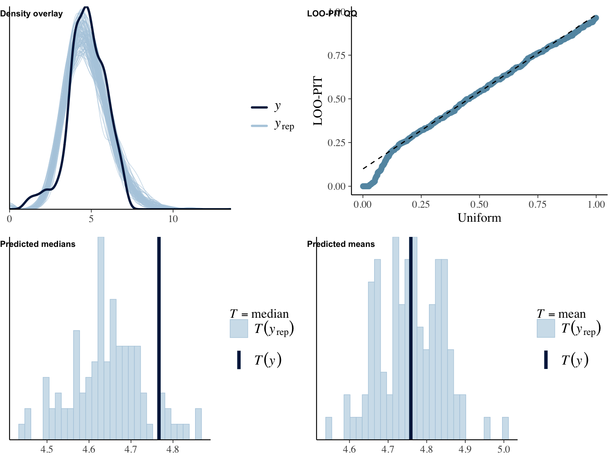
## Family: hurdle_gamma
## Links: mu = log; shape = identity; hu = logit
## Formula: words ~ 1 + age + male + edu + version_lkdslk
## hu ~ 1 + age + male + edu + version_lkdslk
## Data: object (Number of observations: 558)
## Draws: 4 chains, each with iter = 2000; warmup = 1000; thin = 1;
## total post-warmup draws = 4000
##
## Population-Level Effects:
## Estimate Est.Error l-95% CI u-95% CI Rhat Bulk_ESS Tail_ESS
## Intercept 5.16 0.37 4.45 5.93 1.00 7228 2957
## hu_Intercept 1.29 0.37 0.57 2.01 1.00 6882 3025
## age -0.00 0.01 -0.01 0.01 1.00 9453 3241
## male -0.18 0.17 -0.50 0.15 1.00 6485 2824
## edu 0.01 0.09 -0.17 0.20 1.00 7321 2966
## version_lkdslkLike 0.07 0.20 -0.34 0.47 1.00 5372 3613
## version_lkdslkControl 0.46 0.20 0.06 0.86 1.00 4832 3518
## hu_age -0.01 0.01 -0.02 0.00 1.00 6953 3367
## hu_male -0.06 0.17 -0.40 0.27 1.00 7808 3389
## hu_edu -0.21 0.10 -0.41 -0.00 1.00 7863 3480
## hu_version_lkdslkLike -0.22 0.22 -0.66 0.21 1.00 5491 3205
## hu_version_lkdslkControl -0.24 0.22 -0.67 0.19 1.00 5974 3238
##
## Family Specific Parameters:
## Estimate Est.Error l-95% CI u-95% CI Rhat Bulk_ESS Tail_ESS
## shape 0.70 0.06 0.59 0.82 1.00 8864 3275
##
## Draws were sampled using sampling(NUTS). For each parameter, Bulk_ESS
## and Tail_ESS are effective sample size measures, and Rhat is the potential
## scale reduction factor on split chains (at convergence, Rhat = 1).
##
## Results of marginal effects:
## Outcome term contrast estimate conf.low conf.high
## 1 words age dY/dX 0.242 -0.76 1.24
## 2 words edu dY/dX 10.093 -6.99 28.20
## 3 words male 1 - 0 -10.987 -42.19 18.37
## 4 words version_lkdslk Control - Like & dislike 46.875 10.86 92.32
## 5 words version_lkdslk Like - Like & dislike 12.834 -18.23 43.98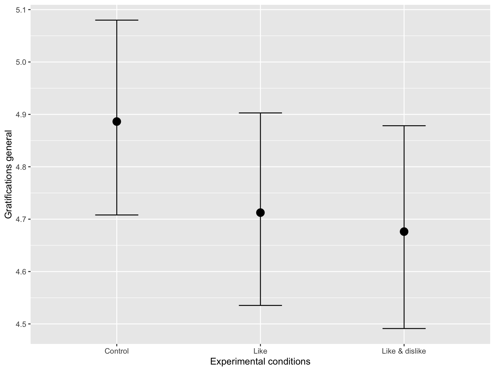
Privacy Concerns
I first compare likes and likes plus dislikes to the control condition.
run_hurdles(
object = d,
name = "pricon_ctrl",
outcome = "pri_con_fs",
predictor = "version",
y_lab = "Privacy concerns",
x_lab = "Experimental conditions"
)## Family: hurdle_gamma
## Links: mu = log; shape = identity; hu = logit
## Formula: pri_con_fs ~ 1 + age + male + edu + version
## hu ~ 1 + age + male + edu + version
## Data: object (Number of observations: 558)
## Draws: 4 chains, each with iter = 2000; warmup = 1000; thin = 1;
## total post-warmup draws = 4000
##
## Population-Level Effects:
## Estimate Est.Error l-95% CI u-95% CI Rhat Bulk_ESS Tail_ESS
## Intercept 1.21 0.09 1.04 1.39 1.00 3743 3225
## hu_Intercept -9.98 6.39 -23.87 0.37 1.00 2177 1642
## age -0.00 0.00 -0.00 0.00 1.00 4434 2617
## male -0.05 0.04 -0.14 0.03 1.00 3863 3005
## edu 0.03 0.03 -0.03 0.08 1.00 3691 2738
## versionLike 0.01 0.05 -0.09 0.11 1.00 3275 2745
## versionLike&dislike 0.06 0.05 -0.05 0.16 1.00 3286 2316
## hu_age 0.00 0.09 -0.16 0.19 1.00 2615 1911
## hu_male -0.14 3.17 -6.71 6.33 1.00 2827 1835
## hu_edu -0.21 1.70 -4.06 2.83 1.00 2666 2182
## hu_versionLike -0.06 4.32 -8.86 8.50 1.00 1898 1892
## hu_versionLike&dislike -0.26 4.62 -9.77 8.80 1.00 1624 1605
##
## Family Specific Parameters:
## Estimate Est.Error l-95% CI u-95% CI Rhat Bulk_ESS Tail_ESS
## shape 3.94 0.22 3.53 4.38 1.00 3907 2696
##
## Draws were sampled using sampling(NUTS). For each parameter, Bulk_ESS
## and Tail_ESS are effective sample size measures, and Rhat is the potential
## scale reduction factor on split chains (at convergence, Rhat = 1).
##
## Results of marginal effects:
## Outcome term contrast estimate conf.low conf.high
## 1 pri_con_fs age dY/dX -0.00599 -0.0148 0.00296
## 2 pri_con_fs edu dY/dX 0.08743 -0.0855 0.25717
## 3 pri_con_fs male 1 - 0 -0.17167 -0.4493 0.09881
## 4 pri_con_fs version Like & dislike - Control 0.18109 -0.1620 0.52139
## 5 pri_con_fs version Like - Control 0.04178 -0.2920 0.36441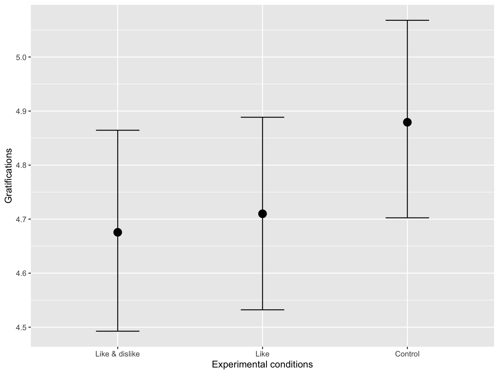
I then compare the likes and control conditions to the likes plus dislikes condition.
run_hurdles(
object = d,
name = "pricon_lkdslk",
outcome = "pri_con_fs",
predictor = "version_lkdslk",
y_lab = "Privacy concerns",
x_lab = "Experimental conditions"
)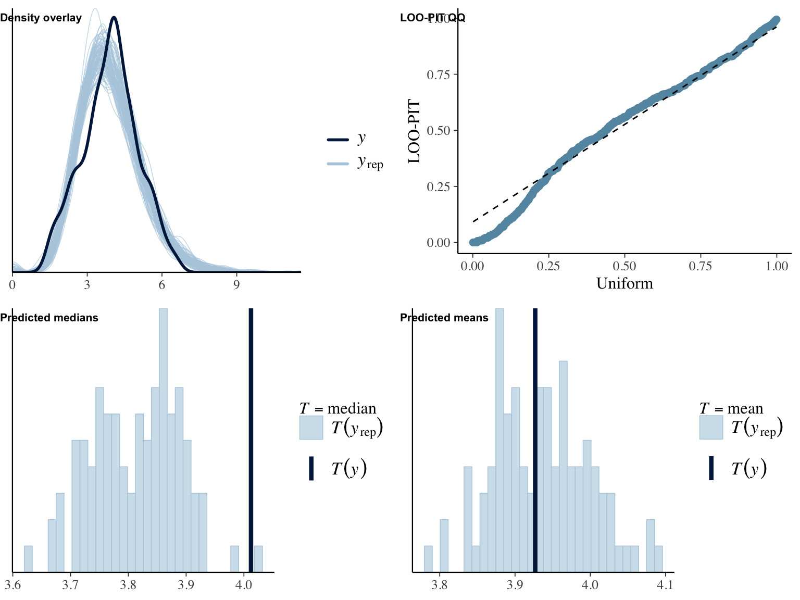
## Family: hurdle_gamma
## Links: mu = log; shape = identity; hu = logit
## Formula: pri_con_fs ~ 1 + age + male + edu + version_lkdslk
## hu ~ 1 + age + male + edu + version_lkdslk
## Data: object (Number of observations: 558)
## Draws: 4 chains, each with iter = 2000; warmup = 1000; thin = 1;
## total post-warmup draws = 4000
##
## Population-Level Effects:
## Estimate Est.Error l-95% CI u-95% CI Rhat Bulk_ESS Tail_ESS
## Intercept 1.27 0.09 1.09 1.44 1.00 4315 3406
## hu_Intercept -10.34 6.29 -24.55 -0.47 1.00 2457 1904
## age -0.00 0.00 -0.00 0.00 1.00 4837 2801
## male -0.06 0.04 -0.14 0.03 1.00 4054 3001
## edu 0.03 0.03 -0.02 0.08 1.00 4009 2480
## version_lkdslkLike -0.04 0.05 -0.15 0.06 1.00 2689 2541
## version_lkdslkControl -0.06 0.05 -0.16 0.05 1.00 2792 2773
## hu_age 0.01 0.08 -0.16 0.18 1.00 2909 2023
## hu_male -0.19 3.25 -7.11 6.34 1.00 2297 1910
## hu_edu -0.20 1.71 -3.92 3.17 1.00 2975 1995
## hu_version_lkdslkLike 0.37 4.50 -8.25 10.35 1.01 1582 1417
## hu_version_lkdslkControl 0.30 4.77 -10.09 10.20 1.00 1477 1360
##
## Family Specific Parameters:
## Estimate Est.Error l-95% CI u-95% CI Rhat Bulk_ESS Tail_ESS
## shape 3.95 0.23 3.52 4.41 1.00 3614 2813
##
## Draws were sampled using sampling(NUTS). For each parameter, Bulk_ESS
## and Tail_ESS are effective sample size measures, and Rhat is the potential
## scale reduction factor on split chains (at convergence, Rhat = 1).
##
## Results of marginal effects:
## Outcome term contrast estimate conf.low conf.high
## 1 pri_con_fs age dY/dX -0.00602 -0.0151 0.00266
## 2 pri_con_fs edu dY/dX 0.08801 -0.0792 0.25364
## 3 pri_con_fs male 1 - 0 -0.18171 -0.4550 0.08837
## 4 pri_con_fs version_lkdslk Control - Like & dislike -0.18314 -0.5232 0.15780
## 5 pri_con_fs version_lkdslk Like - Like & dislike -0.14328 -0.4922 0.20517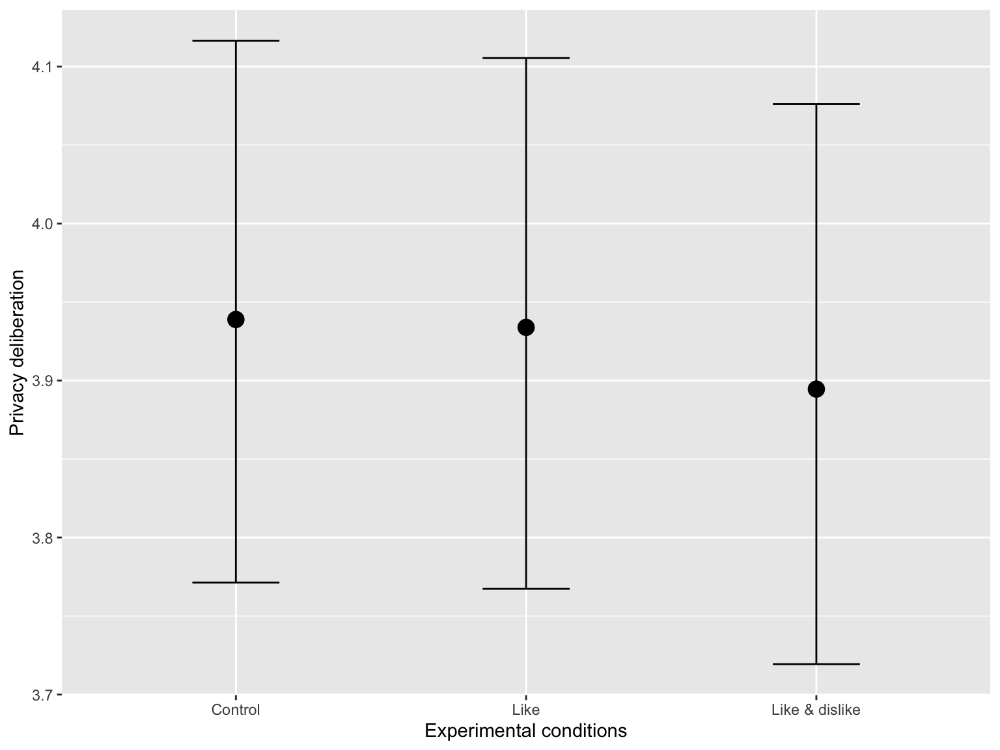
Expected Gratifications
I first compare likes and likes plus dislikes to the control condition.
run_hurdles(
object = d,
name = "grats_ctrl",
outcome = "grats_gen_fs",
predictor = "version",
y_lab = "Gratifications",
x_lab = "Experimental conditions"
)
## Family: hurdle_gamma
## Links: mu = log; shape = identity; hu = logit
## Formula: grats_gen_fs ~ 1 + age + male + edu + version
## hu ~ 1 + age + male + edu + version
## Data: object (Number of observations: 558)
## Draws: 4 chains, each with iter = 2000; warmup = 1000; thin = 1;
## total post-warmup draws = 4000
##
## Population-Level Effects:
## Estimate Est.Error l-95% CI u-95% CI Rhat Bulk_ESS Tail_ESS
## Intercept 1.60 0.05 1.50 1.69 1.00 3600 3482
## hu_Intercept -9.73 6.12 -23.65 0.58 1.00 2199 1996
## age 0.00 0.00 -0.00 0.00 1.00 3813 2517
## male -0.01 0.02 -0.06 0.03 1.00 3550 2707
## edu -0.01 0.01 -0.04 0.02 1.00 4013 2937
## versionLike -0.04 0.03 -0.09 0.02 1.00 3227 2967
## versionLike&dislike -0.04 0.03 -0.10 0.01 1.00 3295 3018
## hu_age 0.00 0.08 -0.16 0.17 1.00 2560 2096
## hu_male -0.23 2.93 -6.31 5.77 1.00 2917 2231
## hu_edu -0.22 1.73 -4.12 2.94 1.00 2999 1654
## hu_versionLike -0.04 4.36 -8.73 9.35 1.00 1945 1315
## hu_versionLike&dislike -0.27 4.61 -9.92 9.04 1.00 1748 1510
##
## Family Specific Parameters:
## Estimate Est.Error l-95% CI u-95% CI Rhat Bulk_ESS Tail_ESS
## shape 13.74 0.84 12.19 15.42 1.00 3038 2799
##
## Draws were sampled using sampling(NUTS). For each parameter, Bulk_ESS
## and Tail_ESS are effective sample size measures, and Rhat is the potential
## scale reduction factor on split chains (at convergence, Rhat = 1).
##
## Results of marginal effects:
## Outcome term contrast estimate conf.low conf.high
## 1 grats_gen_fs age dY/dX 0.0014 -0.00597 0.00838
## 2 grats_gen_fs edu dY/dX -0.0472 -0.18522 0.08904
## 3 grats_gen_fs male 1 - 0 -0.0677 -0.28399 0.15351
## 4 grats_gen_fs version Like & dislike - Control -0.2131 -0.47330 0.05713
## 5 grats_gen_fs version Like - Control -0.1740 -0.43201 0.09040
I then compare the likes and control conditions to the likes plus dislikes condition.
run_hurdles(
object = d,
name = "grats_lkdslk",
outcome = "grats_gen_fs",
predictor = "version_lkdslk",
y_lab = "Gratifications",
x_lab = "Experimental conditions"
)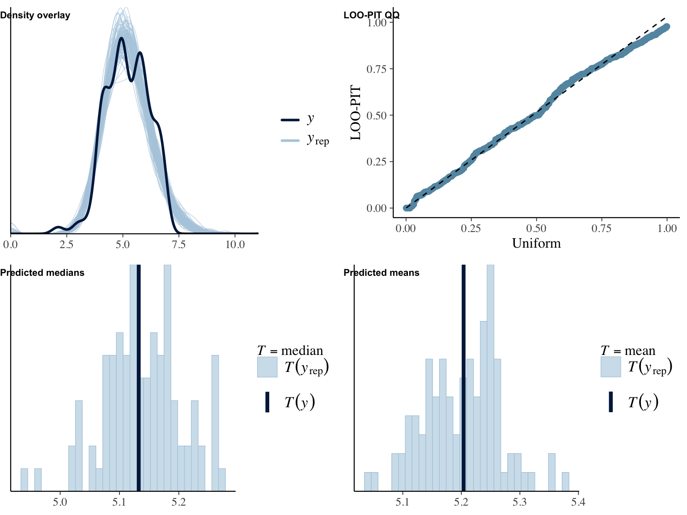
## Family: hurdle_gamma
## Links: mu = log; shape = identity; hu = logit
## Formula: grats_gen_fs ~ 1 + age + male + edu + version_lkdslk
## hu ~ 1 + age + male + edu + version_lkdslk
## Data: object (Number of observations: 558)
## Draws: 4 chains, each with iter = 2000; warmup = 1000; thin = 1;
## total post-warmup draws = 4000
##
## Population-Level Effects:
## Estimate Est.Error l-95% CI u-95% CI Rhat Bulk_ESS Tail_ESS
## Intercept 1.56 0.05 1.46 1.65 1.00 3593 3030
## hu_Intercept -10.25 6.24 -24.42 -0.13 1.00 2494 2146
## age 0.00 0.00 -0.00 0.00 1.00 3911 2761
## male -0.01 0.02 -0.06 0.03 1.00 3329 2678
## edu -0.01 0.01 -0.04 0.02 1.00 3470 2634
## version_lkdslkLike 0.01 0.03 -0.05 0.07 1.00 3021 2902
## version_lkdslkControl 0.04 0.03 -0.01 0.10 1.00 2859 2815
## hu_age 0.01 0.08 -0.15 0.17 1.00 3088 2182
## hu_male -0.23 3.09 -6.53 6.07 1.00 2736 1709
## hu_edu -0.23 1.79 -4.35 3.00 1.00 2970 1787
## hu_version_lkdslkLike 0.33 4.64 -9.02 10.19 1.00 1689 1421
## hu_version_lkdslkControl 0.29 4.75 -9.63 10.41 1.00 1969 1524
##
## Family Specific Parameters:
## Estimate Est.Error l-95% CI u-95% CI Rhat Bulk_ESS Tail_ESS
## shape 13.72 0.83 12.12 15.37 1.00 3517 2626
##
## Draws were sampled using sampling(NUTS). For each parameter, Bulk_ESS
## and Tail_ESS are effective sample size measures, and Rhat is the potential
## scale reduction factor on split chains (at convergence, Rhat = 1).
##
## Results of marginal effects:
## Outcome term contrast estimate conf.low conf.high
## 1 grats_gen_fs age dY/dX 0.00134 -0.00592 0.00854
## 2 grats_gen_fs edu dY/dX -0.04996 -0.18138 0.08933
## 3 grats_gen_fs male 1 - 0 -0.06741 -0.28667 0.15598
## 4 grats_gen_fs version_lkdslk Control - Like & dislike 0.21382 -0.06423 0.48962
## 5 grats_gen_fs version_lkdslk Like - Like & dislike 0.04557 -0.22216 0.31177Privacy Deliberation
I first compare likes and likes plus dislikes to the control condition.
run_hurdles(
object = d,
name = "pridel_ctrl",
outcome = "pri_del_fs",
predictor = "version",
y_lab = "Privacy deliberation",
x_lab = "Experimental conditions"
)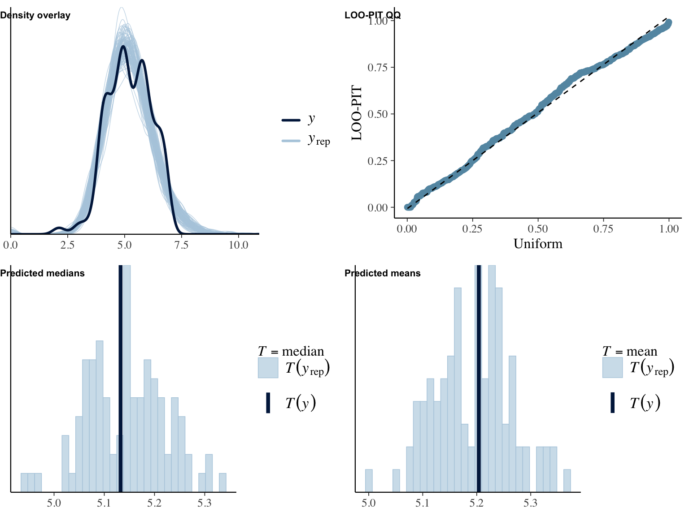
## Family: hurdle_gamma
## Links: mu = log; shape = identity; hu = logit
## Formula: pri_del_fs ~ 1 + age + male + edu + version
## hu ~ 1 + age + male + edu + version
## Data: object (Number of observations: 558)
## Draws: 4 chains, each with iter = 2000; warmup = 1000; thin = 1;
## total post-warmup draws = 4000
##
## Population-Level Effects:
## Estimate Est.Error l-95% CI u-95% CI Rhat Bulk_ESS Tail_ESS
## Intercept 1.50 0.05 1.40 1.61 1.00 3674 3423
## hu_Intercept -9.92 6.12 -23.85 0.18 1.00 2525 2372
## age -0.00 0.00 -0.00 -0.00 1.00 4392 2511
## male -0.05 0.03 -0.10 -0.00 1.00 3616 2744
## edu 0.00 0.01 -0.03 0.03 1.00 3580 2342
## versionLike -0.00 0.03 -0.06 0.06 1.00 2788 2797
## versionLike&dislike -0.01 0.03 -0.07 0.05 1.00 2879 2800
## hu_age 0.00 0.08 -0.15 0.17 1.00 3336 2266
## hu_male -0.02 3.12 -6.32 6.54 1.00 2716 2261
## hu_edu -0.24 1.75 -4.21 3.11 1.00 2956 2085
## hu_versionLike 0.05 4.32 -9.20 9.18 1.00 1866 1679
## hu_versionLike&dislike -0.16 4.46 -9.55 9.06 1.00 1937 1776
##
## Family Specific Parameters:
## Estimate Est.Error l-95% CI u-95% CI Rhat Bulk_ESS Tail_ESS
## shape 11.40 0.67 10.14 12.76 1.00 3740 2933
##
## Draws were sampled using sampling(NUTS). For each parameter, Bulk_ESS
## and Tail_ESS are effective sample size measures, and Rhat is the potential
## scale reduction factor on split chains (at convergence, Rhat = 1).
##
## Results of marginal effects:
## Outcome term contrast estimate conf.low conf.high
## 1 pri_del_fs age dY/dX -0.00946 -0.0157 -0.00314
## 2 pri_del_fs edu dY/dX 0.01257 -0.1062 0.13152
## 3 pri_del_fs male 1 - 0 -0.20800 -0.3958 -0.00819
## 4 pri_del_fs version Like & dislike - Control -0.04594 -0.2836 0.19913
## 5 pri_del_fs version Like - Control -0.00429 -0.2375 0.23725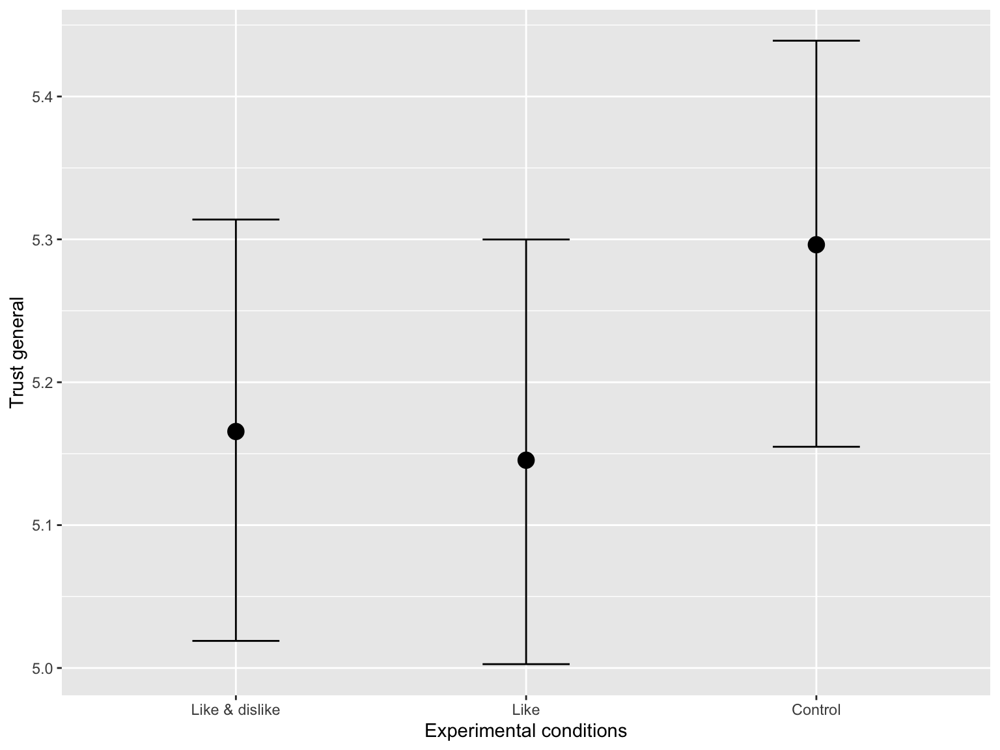
I then compare the likes and control conditions to the likes plus dislikes condition.
run_hurdles(
object = d,
name = "pridel_lkdslk",
outcome = "pri_del_fs",
predictor = "version_lkdslk",
y_lab = "Privacy deliberation",
x_lab = "Experimental conditions"
)
## Family: hurdle_gamma
## Links: mu = log; shape = identity; hu = logit
## Formula: pri_del_fs ~ 1 + age + male + edu + version_lkdslk
## hu ~ 1 + age + male + edu + version_lkdslk
## Data: object (Number of observations: 558)
## Draws: 4 chains, each with iter = 2000; warmup = 1000; thin = 1;
## total post-warmup draws = 4000
##
## Population-Level Effects:
## Estimate Est.Error l-95% CI u-95% CI Rhat Bulk_ESS Tail_ESS
## Intercept 1.49 0.05 1.39 1.59 1.00 4194 3261
## hu_Intercept -9.98 5.95 -23.04 -0.10 1.00 2654 2586
## age -0.00 0.00 -0.00 -0.00 1.00 4250 2877
## male -0.05 0.03 -0.10 -0.00 1.00 4541 3028
## edu 0.00 0.02 -0.03 0.03 1.00 4244 2683
## version_lkdslkLike 0.01 0.03 -0.05 0.07 1.00 3313 3064
## version_lkdslkControl 0.01 0.03 -0.05 0.07 1.00 3307 2880
## hu_age 0.00 0.08 -0.16 0.17 1.00 3568 2671
## hu_male -0.12 3.16 -6.82 6.29 1.00 2772 1943
## hu_edu -0.21 1.73 -4.08 2.93 1.00 2383 1803
## hu_version_lkdslkLike 0.00 4.40 -8.82 9.25 1.00 1697 1773
## hu_version_lkdslkControl 0.06 4.42 -8.85 9.11 1.00 1704 1759
##
## Family Specific Parameters:
## Estimate Est.Error l-95% CI u-95% CI Rhat Bulk_ESS Tail_ESS
## shape 11.41 0.66 10.16 12.77 1.00 4021 2999
##
## Draws were sampled using sampling(NUTS). For each parameter, Bulk_ESS
## and Tail_ESS are effective sample size measures, and Rhat is the potential
## scale reduction factor on split chains (at convergence, Rhat = 1).
##
## Results of marginal effects:
## Outcome term contrast estimate conf.low conf.high
## 1 pri_del_fs age dY/dX -0.00933 -0.0158 -0.003218
## 2 pri_del_fs edu dY/dX 0.01274 -0.1052 0.132749
## 3 pri_del_fs male 1 - 0 -0.20666 -0.4114 0.000318
## 4 pri_del_fs version_lkdslk Control - Like & dislike 0.04031 -0.2057 0.274421
## 5 pri_del_fs version_lkdslk Like - Like & dislike 0.03478 -0.2049 0.277462
Trust
I first compare likes and likes plus dislikes to the control condition.
run_hurdles(
object = d,
name = "trust_ctrl",
outcome = "trust_gen_fs",
predictor = "version",
y_lab = "Trust",
x_lab = "Experimental conditions"
)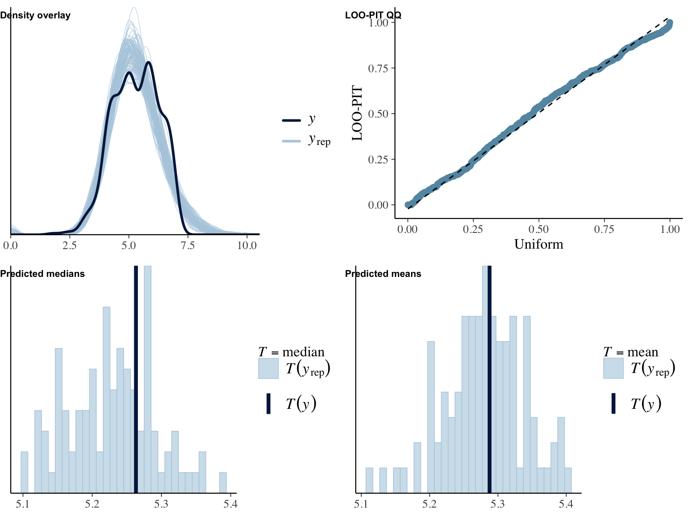
## Family: hurdle_gamma
## Links: mu = log; shape = identity; hu = logit
## Formula: trust_gen_fs ~ 1 + age + male + edu + version
## hu ~ 1 + age + male + edu + version
## Data: object (Number of observations: 558)
## Draws: 4 chains, each with iter = 2000; warmup = 1000; thin = 1;
## total post-warmup draws = 4000
##
## Population-Level Effects:
## Estimate Est.Error l-95% CI u-95% CI Rhat Bulk_ESS Tail_ESS
## Intercept 1.69 0.03 1.63 1.76 1.00 4120 3122
## hu_Intercept -9.82 6.13 -23.81 0.33 1.00 2949 2113
## age -0.00 0.00 -0.00 0.00 1.00 4080 2747
## male 0.00 0.02 -0.03 0.03 1.00 4498 2967
## edu -0.00 0.01 -0.02 0.02 1.00 4905 2869
## versionLike -0.03 0.02 -0.07 0.01 1.00 3879 2714
## versionLike&dislike -0.03 0.02 -0.06 0.01 1.00 3648 2794
## hu_age 0.01 0.08 -0.16 0.17 1.00 3647 2768
## hu_male -0.25 3.15 -6.83 5.78 1.00 3586 2303
## hu_edu -0.25 1.78 -4.13 3.07 1.00 3385 2257
## hu_versionLike -0.03 4.38 -9.10 8.99 1.00 2217 1768
## hu_versionLike&dislike -0.43 4.74 -10.79 9.27 1.00 2023 1547
##
## Family Specific Parameters:
## Estimate Est.Error l-95% CI u-95% CI Rhat Bulk_ESS Tail_ESS
## shape 27.50 1.63 24.41 30.83 1.00 4329 2535
##
## Draws were sampled using sampling(NUTS). For each parameter, Bulk_ESS
## and Tail_ESS are effective sample size measures, and Rhat is the potential
## scale reduction factor on split chains (at convergence, Rhat = 1).
##
## Results of marginal effects:
## Outcome term contrast estimate conf.low conf.high
## 1 trust_gen_fs age dY/dX -0.003088 -0.00868 0.0027
## 2 trust_gen_fs edu dY/dX 0.000676 -0.10703 0.1100
## 3 trust_gen_fs male 1 - 0 0.014605 -0.15613 0.1856
## 4 trust_gen_fs version Like & dislike - Control -0.130943 -0.34108 0.0755
## 5 trust_gen_fs version Like - Control -0.149821 -0.36037 0.0529
I then compare the likes and control conditions to the likes plus dislikes condition.
run_hurdles(
object = d,
name = "trust_lkdslk",
outcome = "trust_gen_fs",
predictor = "version_lkdslk",
y_lab = "Trust",
x_lab = "Experimental conditions"
)
## Family: hurdle_gamma
## Links: mu = log; shape = identity; hu = logit
## Formula: trust_gen_fs ~ 1 + age + male + edu + version_lkdslk
## hu ~ 1 + age + male + edu + version_lkdslk
## Data: object (Number of observations: 558)
## Draws: 4 chains, each with iter = 2000; warmup = 1000; thin = 1;
## total post-warmup draws = 4000
##
## Population-Level Effects:
## Estimate Est.Error l-95% CI u-95% CI Rhat Bulk_ESS Tail_ESS
## Intercept 1.67 0.03 1.60 1.73 1.00 4282 3214
## hu_Intercept -10.00 5.98 -22.94 -0.06 1.00 3310 2686
## age -0.00 0.00 -0.00 0.00 1.00 3858 2564
## male 0.00 0.02 -0.03 0.03 1.00 5170 2990
## edu -0.00 0.01 -0.02 0.02 1.00 5170 2643
## version_lkdslkLike -0.00 0.02 -0.04 0.04 1.00 3903 2773
## version_lkdslkControl 0.03 0.02 -0.01 0.06 1.00 4008 3070
## hu_age 0.00 0.08 -0.15 0.17 1.00 4408 2810
## hu_male -0.10 3.17 -6.79 6.50 1.00 3494 2325
## hu_edu -0.23 1.69 -3.76 3.00 1.00 3712 2196
## hu_version_lkdslkLike 0.02 4.40 -8.97 8.96 1.00 2625 1774
## hu_version_lkdslkControl 0.21 4.33 -8.40 9.35 1.00 2559 1899
##
## Family Specific Parameters:
## Estimate Est.Error l-95% CI u-95% CI Rhat Bulk_ESS Tail_ESS
## shape 27.48 1.63 24.41 30.71 1.00 5308 3037
##
## Draws were sampled using sampling(NUTS). For each parameter, Bulk_ESS
## and Tail_ESS are effective sample size measures, and Rhat is the potential
## scale reduction factor on split chains (at convergence, Rhat = 1).
##
## Results of marginal effects:
## Outcome term contrast estimate conf.low conf.high
## 1 trust_gen_fs age dY/dX -0.002975 -0.00885 0.00245
## 2 trust_gen_fs edu dY/dX 0.000415 -0.10448 0.10706
## 3 trust_gen_fs male 1 - 0 0.014388 -0.15825 0.18115
## 4 trust_gen_fs version_lkdslk Control - Like & dislike 0.132092 -0.08126 0.34460
## 5 trust_gen_fs version_lkdslk Like - Like & dislike -0.020094 -0.22502 0.19228
Self-Efficacy
I first compare likes and likes plus dislikes to the control condition.
run_hurdles(
object = d,
name = "selfeff_ctrl",
outcome = "self_eff_fs",
predictor = "version",
y_lab = "Self-efficacy",
x_lab = "Experimental conditions"
)
## Family: hurdle_gamma
## Links: mu = log; shape = identity; hu = logit
## Formula: self_eff_fs ~ 1 + age + male + edu + version
## hu ~ 1 + age + male + edu + version
## Data: object (Number of observations: 558)
## Draws: 4 chains, each with iter = 2000; warmup = 1000; thin = 1;
## total post-warmup draws = 4000
##
## Population-Level Effects:
## Estimate Est.Error l-95% CI u-95% CI Rhat Bulk_ESS Tail_ESS
## Intercept 1.62 0.03 1.56 1.69 1.00 3949 3190
## hu_Intercept -10.03 6.21 -24.18 0.37 1.00 2623 2352
## age -0.00 0.00 -0.00 0.00 1.00 3872 2560
## male 0.01 0.02 -0.02 0.05 1.00 4199 2495
## edu 0.03 0.01 0.01 0.04 1.00 4236 2877
## versionLike -0.02 0.02 -0.05 0.02 1.00 3942 2693
## versionLike&dislike -0.02 0.02 -0.06 0.02 1.00 4105 2978
## hu_age 0.00 0.08 -0.15 0.18 1.00 2872 1926
## hu_male -0.08 3.17 -6.71 6.37 1.00 3760 2517
## hu_edu -0.22 1.84 -4.26 3.14 1.00 3615 1919
## hu_versionLike -0.08 4.28 -9.12 8.69 1.00 2448 1926
## hu_versionLike&dislike -0.25 4.52 -9.96 9.24 1.00 2063 2031
##
## Family Specific Parameters:
## Estimate Est.Error l-95% CI u-95% CI Rhat Bulk_ESS Tail_ESS
## shape 27.96 1.68 24.81 31.30 1.00 4397 2849
##
## Draws were sampled using sampling(NUTS). For each parameter, Bulk_ESS
## and Tail_ESS are effective sample size measures, and Rhat is the potential
## scale reduction factor on split chains (at convergence, Rhat = 1).
##
## Results of marginal effects:
## Outcome term contrast estimate conf.low conf.high
## 1 self_eff_fs age dY/dX -3.36e-05 -0.00607 0.00581
## 2 self_eff_fs edu dY/dX 1.34e-01 0.03027 0.24163
## 3 self_eff_fs male 1 - 0 8.01e-02 -0.09686 0.25068
## 4 self_eff_fs version Like & dislike - Control -8.93e-02 -0.30122 0.12178
## 5 self_eff_fs version Like - Control -8.83e-02 -0.29383 0.11259
I then compare the likes and control conditions to the likes plus dislikes condition.
run_hurdles(
object = d,
name = "selfeff_lkdslk",
outcome = "self_eff_fs",
predictor = "version_lkdslk",
y_lab = "Self-efficacy",
x_lab = "Experimental conditions"
)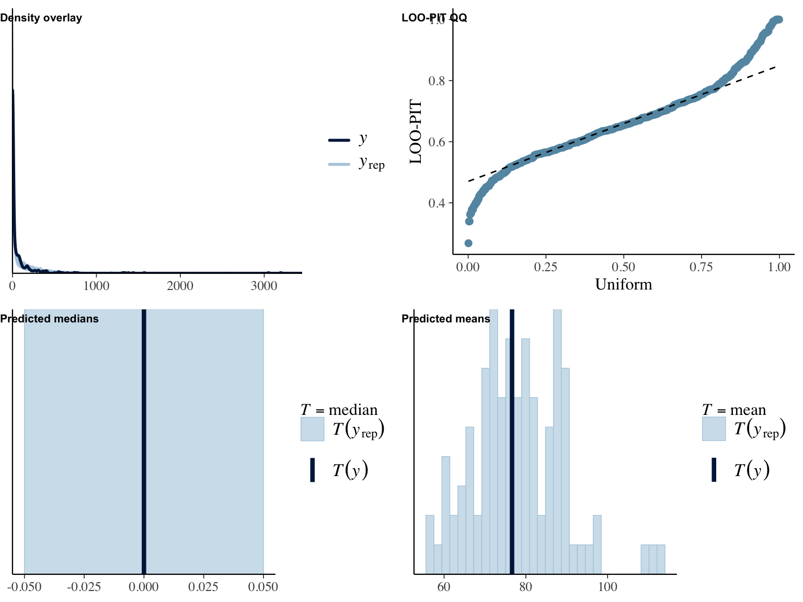
## Family: hurdle_gamma
## Links: mu = log; shape = identity; hu = logit
## Formula: self_eff_fs ~ 1 + age + male + edu + version_lkdslk
## hu ~ 1 + age + male + edu + version_lkdslk
## Data: object (Number of observations: 558)
## Draws: 4 chains, each with iter = 2000; warmup = 1000; thin = 1;
## total post-warmup draws = 4000
##
## Population-Level Effects:
## Estimate Est.Error l-95% CI u-95% CI Rhat Bulk_ESS Tail_ESS
## Intercept 1.61 0.03 1.54 1.67 1.00 3906 3251
## hu_Intercept -9.96 6.30 -24.26 0.35 1.00 2409 1889
## age -0.00 0.00 -0.00 0.00 1.00 4205 2677
## male 0.02 0.02 -0.02 0.05 1.00 4040 2710
## edu 0.03 0.01 0.01 0.04 1.00 4392 2991
## version_lkdslkLike 0.00 0.02 -0.04 0.04 1.00 3880 3105
## version_lkdslkControl 0.02 0.02 -0.02 0.06 1.00 3709 2965
## hu_age 0.00 0.08 -0.16 0.17 1.00 3502 2317
## hu_male -0.07 3.15 -6.57 6.62 1.00 2828 2025
## hu_edu -0.24 1.82 -4.40 3.16 1.00 2993 1972
## hu_version_lkdslkLike 0.12 4.39 -8.80 9.38 1.00 2203 1502
## hu_version_lkdslkControl 0.19 4.51 -9.35 10.25 1.00 1995 1561
##
## Family Specific Parameters:
## Estimate Est.Error l-95% CI u-95% CI Rhat Bulk_ESS Tail_ESS
## shape 27.96 1.69 24.75 31.41 1.00 3938 2629
##
## Draws were sampled using sampling(NUTS). For each parameter, Bulk_ESS
## and Tail_ESS are effective sample size measures, and Rhat is the potential
## scale reduction factor on split chains (at convergence, Rhat = 1).
##
## Results of marginal effects:
## Outcome term contrast estimate conf.low conf.high
## 1 self_eff_fs age dY/dX -9.12e-05 -0.00593 0.00557
## 2 self_eff_fs edu dY/dX 1.34e-01 0.02648 0.24601
## 3 self_eff_fs male 1 - 0 8.28e-02 -0.08763 0.25915
## 4 self_eff_fs version_lkdslk Control - Like & dislike 9.08e-02 -0.11981 0.29829
## 5 self_eff_fs version_lkdslk Like - Like & dislike -1.84e-05 -0.20647 0.21538
Words
Privacy Concerns
run_hurdles(
object = d,
name = "wrds_pricon",
outcome = "words",
predictor = "pri_con_fs",
y_lab = "Words",
x_lab = "Privacy concerns"
)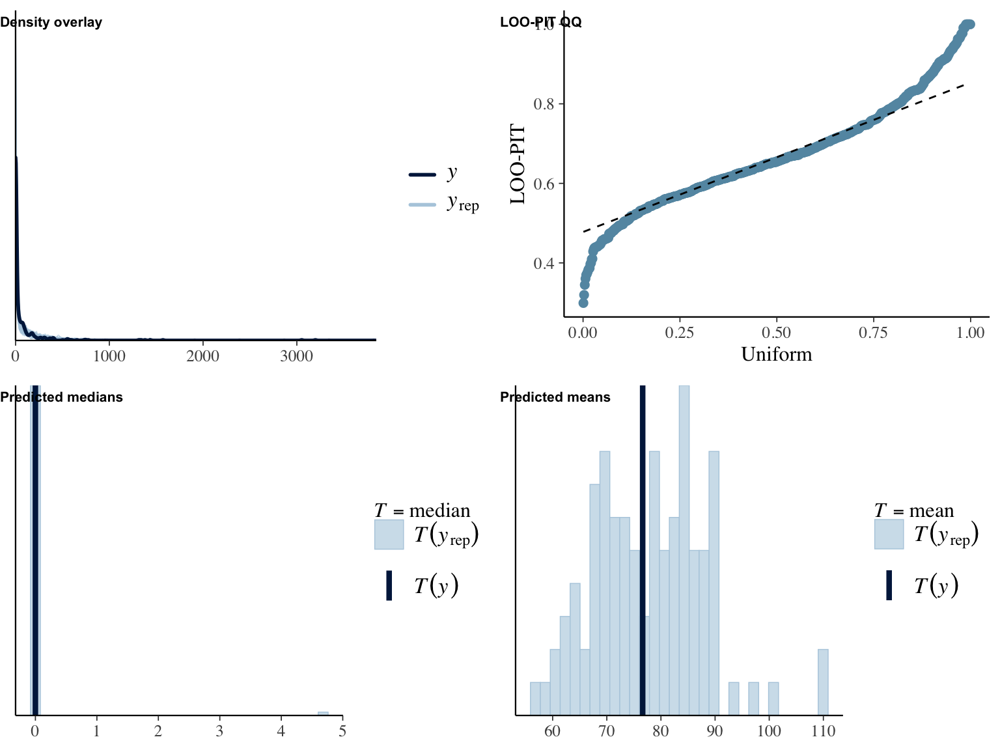
## Family: hurdle_gamma
## Links: mu = log; shape = identity; hu = logit
## Formula: words ~ 1 + age + male + edu + pri_con_fs
## hu ~ 1 + age + male + edu + pri_con_fs
## Data: object (Number of observations: 558)
## Draws: 4 chains, each with iter = 2000; warmup = 1000; thin = 1;
## total post-warmup draws = 4000
##
## Population-Level Effects:
## Estimate Est.Error l-95% CI u-95% CI Rhat Bulk_ESS Tail_ESS
## Intercept 5.65 0.42 4.87 6.49 1.00 7151 3394
## hu_Intercept 0.53 0.40 -0.24 1.32 1.00 8343 2828
## age -0.00 0.01 -0.01 0.01 1.00 7658 3122
## male -0.08 0.17 -0.40 0.25 1.00 6547 2888
## edu -0.01 0.10 -0.20 0.18 1.00 7199 2958
## pri_con_fs -0.10 0.06 -0.21 0.02 1.00 7179 3154
## hu_age -0.01 0.01 -0.02 0.00 1.00 8137 3122
## hu_male -0.03 0.18 -0.38 0.33 1.00 8042 2891
## hu_edu -0.23 0.11 -0.44 -0.02 1.00 8446 2750
## hu_pri_con_fs 0.19 0.06 0.07 0.30 1.00 7964 3084
##
## Family Specific Parameters:
## Estimate Est.Error l-95% CI u-95% CI Rhat Bulk_ESS Tail_ESS
## shape 0.69 0.06 0.59 0.81 1.00 7655 2865
##
## Draws were sampled using sampling(NUTS). For each parameter, Bulk_ESS
## and Tail_ESS are effective sample size measures, and Rhat is the potential
## scale reduction factor on split chains (at convergence, Rhat = 1).
##
## Results of marginal effects:
## Outcome term contrast estimate conf.low conf.high
## 1 words age dY/dX 0.193 -0.863 1.19
## 2 words edu dY/dX 9.287 -8.538 25.89
## 3 words male 1 - 0 -4.716 -35.061 25.80
## 4 words pri_con_fs dY/dX -15.630 -27.675 -5.70
Let’s explore how number of communicated words differ for people very much concerned versus not concerned at all.
# let's extract effects for 1
wrds_pricon_1 <-
fig_wrds_pricon %$%
data %>%
filter(
pri_con_fs ==
min(.$pri_con_fs)
) %$%
estimate__ %>%
round(0)
# let's extract effects for 7
wrds_pricon_7 <-
fig_wrds_pricon %$%
data %>%
filter(
pri_con_fs ==
max(.$pri_con_fs)
) %$%
estimate__ %>%
round(0)People who were not concerned at all communicated on average 116 words, whereas people strongly concerned communicated on average 33 words.
Expected Gratifications
run_hurdles(
object = d,
name = "wrds_grats",
outcome = "words",
predictor = "grats_gen_fs",
y_lab = "Words",
x_lab = "Expected gratifications"
)
## Family: hurdle_gamma
## Links: mu = log; shape = identity; hu = logit
## Formula: words ~ 1 + age + male + edu + grats_gen_fs
## hu ~ 1 + age + male + edu + grats_gen_fs
## Data: object (Number of observations: 558)
## Draws: 4 chains, each with iter = 2000; warmup = 1000; thin = 1;
## total post-warmup draws = 4000
##
## Population-Level Effects:
## Estimate Est.Error l-95% CI u-95% CI Rhat Bulk_ESS Tail_ESS
## Intercept 4.29 0.47 3.39 5.23 1.00 6690 3144
## hu_Intercept 2.27 0.53 1.25 3.32 1.00 7445 2983
## age -0.00 0.01 -0.02 0.01 1.00 7888 3051
## male -0.08 0.16 -0.40 0.24 1.00 7799 2783
## edu 0.03 0.09 -0.15 0.21 1.00 6800 2803
## grats_gen_fs 0.22 0.07 0.07 0.36 1.00 7661 2983
## hu_age -0.01 0.01 -0.02 0.00 1.00 8642 3129
## hu_male -0.08 0.18 -0.42 0.26 1.00 7828 3304
## hu_edu -0.22 0.11 -0.44 -0.02 1.00 7967 2666
## hu_grats_gen_fs -0.23 0.08 -0.38 -0.07 1.00 7517 2942
##
## Family Specific Parameters:
## Estimate Est.Error l-95% CI u-95% CI Rhat Bulk_ESS Tail_ESS
## shape 0.71 0.06 0.60 0.82 1.00 7522 2924
##
## Draws were sampled using sampling(NUTS). For each parameter, Bulk_ESS
## and Tail_ESS are effective sample size measures, and Rhat is the potential
## scale reduction factor on split chains (at convergence, Rhat = 1).
##
## Results of marginal effects:
## Outcome term contrast estimate conf.low conf.high
## 1 words age dY/dX 0.0663 -1.02 1.02
## 2 words edu dY/dX 12.0175 -4.09 29.95
## 3 words grats_gen_fs dY/dX 26.5153 13.38 43.23
## 4 words male 1 - 0 -2.9678 -32.25 26.57
Privacy Deliberation
run_hurdles(
object = d,
name = "wrds_pridel",
outcome = "words",
predictor = "pri_del_fs",
y_lab = "Words",
x_lab = "Privacy deliberation"
)
## Family: hurdle_gamma
## Links: mu = log; shape = identity; hu = logit
## Formula: words ~ 1 + age + male + edu + pri_del_fs
## hu ~ 1 + age + male + edu + pri_del_fs
## Data: object (Number of observations: 558)
## Draws: 4 chains, each with iter = 2000; warmup = 1000; thin = 1;
## total post-warmup draws = 4000
##
## Population-Level Effects:
## Estimate Est.Error l-95% CI u-95% CI Rhat Bulk_ESS Tail_ESS
## Intercept 6.50 0.49 5.56 7.52 1.00 7212 3111
## hu_Intercept -0.15 0.50 -1.13 0.82 1.00 9161 2810
## age -0.01 0.01 -0.02 0.01 1.00 8234 3643
## male -0.08 0.16 -0.39 0.24 1.00 6712 2815
## edu -0.02 0.10 -0.21 0.18 1.00 7390 3018
## pri_del_fs -0.26 0.07 -0.41 -0.12 1.00 7180 3066
## hu_age -0.01 0.01 -0.02 0.00 1.00 8937 3572
## hu_male -0.01 0.19 -0.37 0.35 1.00 9421 3170
## hu_edu -0.22 0.10 -0.43 -0.02 1.00 7468 3217
## hu_pri_del_fs 0.30 0.08 0.14 0.47 1.00 7434 2829
##
## Family Specific Parameters:
## Estimate Est.Error l-95% CI u-95% CI Rhat Bulk_ESS Tail_ESS
## shape 0.71 0.06 0.61 0.83 1.00 8418 2661
##
## Draws were sampled using sampling(NUTS). For each parameter, Bulk_ESS
## and Tail_ESS are effective sample size measures, and Rhat is the potential
## scale reduction factor on split chains (at convergence, Rhat = 1).
##
## Results of marginal effects:
## Outcome term contrast estimate conf.low conf.high
## 1 words age dY/dX -0.162 -1.22 0.798
## 2 words edu dY/dX 7.578 -9.87 25.411
## 3 words male 1 - 0 -5.931 -35.36 24.052
## 4 words pri_del_fs dY/dX -33.295 -50.89 -19.501
Trust
run_hurdles(
object = d,
name = "wrds_trust",
outcome = "words",
predictor = "trust_gen_fs",
y_lab = "Words",
x_lab = "Trust"
)
## Family: hurdle_gamma
## Links: mu = log; shape = identity; hu = logit
## Formula: words ~ 1 + age + male + edu + trust_gen_fs
## hu ~ 1 + age + male + edu + trust_gen_fs
## Data: object (Number of observations: 558)
## Draws: 4 chains, each with iter = 2000; warmup = 1000; thin = 1;
## total post-warmup draws = 4000
##
## Population-Level Effects:
## Estimate Est.Error l-95% CI u-95% CI Rhat Bulk_ESS Tail_ESS
## Intercept 4.24 0.59 3.11 5.39 1.00 6678 3333
## hu_Intercept 3.10 0.62 1.91 4.28 1.00 8049 2761
## age -0.00 0.01 -0.01 0.01 1.00 7414 3193
## male -0.07 0.16 -0.40 0.25 1.00 7813 2965
## edu -0.01 0.09 -0.20 0.18 1.00 7715 3222
## trust_gen_fs 0.21 0.10 0.01 0.40 1.00 6526 2750
## hu_age -0.01 0.01 -0.02 0.00 1.00 7360 3351
## hu_male -0.06 0.18 -0.40 0.29 1.00 7266 3191
## hu_edu -0.22 0.11 -0.43 -0.00 1.00 6799 2999
## hu_trust_gen_fs -0.36 0.09 -0.54 -0.18 1.00 7244 3157
##
## Family Specific Parameters:
## Estimate Est.Error l-95% CI u-95% CI Rhat Bulk_ESS Tail_ESS
## shape 0.69 0.05 0.59 0.81 1.00 6231 3080
##
## Draws were sampled using sampling(NUTS). For each parameter, Bulk_ESS
## and Tail_ESS are effective sample size measures, and Rhat is the potential
## scale reduction factor on split chains (at convergence, Rhat = 1).
##
## Results of marginal effects:
## Outcome term contrast estimate conf.low conf.high
## 1 words age dY/dX 0.274 -0.73 1.31
## 2 words edu dY/dX 8.196 -8.91 26.04
## 3 words male 1 - 0 -3.091 -33.56 28.43
## 4 words trust_gen_fs dY/dX 31.450 13.90 53.11
Self-Efficacy
run_hurdles(
object = d,
name = "wrds_selfeff",
outcome = "words",
predictor = "self_eff_fs",
y_lab = "Words",
x_lab = "Self-Efficacy"
)
## Family: hurdle_gamma
## Links: mu = log; shape = identity; hu = logit
## Formula: words ~ 1 + age + male + edu + self_eff_fs
## hu ~ 1 + age + male + edu + self_eff_fs
## Data: object (Number of observations: 558)
## Draws: 4 chains, each with iter = 2000; warmup = 1000; thin = 1;
## total post-warmup draws = 4000
##
## Population-Level Effects:
## Estimate Est.Error l-95% CI u-95% CI Rhat Bulk_ESS Tail_ESS
## Intercept 2.17 0.48 1.24 3.15 1.00 7747 3727
## hu_Intercept 5.78 0.70 4.47 7.16 1.00 7184 3011
## age -0.00 0.01 -0.01 0.01 1.00 10175 3155
## male -0.15 0.15 -0.44 0.13 1.00 7448 3102
## edu -0.06 0.09 -0.23 0.11 1.00 8374 3360
## self_eff_fs 0.58 0.08 0.43 0.73 1.00 7283 2988
## hu_age -0.01 0.01 -0.02 0.00 1.00 8052 2927
## hu_male -0.01 0.18 -0.36 0.36 1.00 7403 3359
## hu_edu -0.12 0.11 -0.34 0.09 1.00 7655 3267
## hu_self_eff_fs -0.88 0.11 -1.10 -0.67 1.00 7710 2997
##
## Family Specific Parameters:
## Estimate Est.Error l-95% CI u-95% CI Rhat Bulk_ESS Tail_ESS
## shape 0.80 0.06 0.68 0.93 1.01 7340 3151
##
## Draws were sampled using sampling(NUTS). For each parameter, Bulk_ESS
## and Tail_ESS are effective sample size measures, and Rhat is the potential
## scale reduction factor on split chains (at convergence, Rhat = 1).
##
## Results of marginal effects:
## Outcome term contrast estimate conf.low conf.high
## 1 words age dY/dX 0.030 -0.925 0.923
## 2 words edu dY/dX -0.747 -16.171 13.968
## 3 words male 1 - 0 -11.159 -37.485 14.129
## 4 words self_eff_fs dY/dX 72.542 55.125 95.476
The effects is markedly exponential. Let’s inspect the changes across values in self-efficacy.
effects_wrds_selfeff <-
slopes(
fit_wrds_selfeff,
newdata = datagrid(
self_eff_fs = c(1, 6, 7)
),
grid_type = "counterfactual"
) %>%
filter(
term == "self_eff_fs"
) %T>%
print()##
## Term Contrast Estimate 2.5 % 97.5 % age male edu self_eff_fs
## self_eff_fs dY/dX 0.233 0.0842 0.631 46.1 0.493 1.85 1
## self_eff_fs dY/dX 103.846 77.2929 136.607 46.1 0.493 1.85 6
## self_eff_fs dY/dX 205.235 132.4693 308.180 46.1 0.493 1.85 7
##
## Columns: rowid, term, contrast, estimate, conf.low, conf.high, predicted, predicted_hi, predicted_lo, tmp_idx, words, age, male, edu, self_eff_fs# let's extract effects for 1
effects_wrds_selfeff_12 <-
effects_wrds_selfeff %>%
filter(
self_eff_fs == 1 &
term == "self_eff_fs") %>%
select(estimate)
# let's extract effects for 7
effects_wrds_selfeff_67 <-
effects_wrds_selfeff %>%
filter(
self_eff_fs == 6 &
term == "self_eff_fs") %>%
select(estimate)Whereas a change in self-efficacy from 1 to 2 led to an increase of 0 words, a change from 6 to 7 led to an increase of 104 words.
Let’s explore how number of communicated words differ for people very much self-efficacious versus not self-efficacious at all.
# let's extract effects for 1
wrds_selfeff_1 <-
fig_wrds_selfeff %$%
data %>%
filter(
self_eff_fs ==
min(.$self_eff_fs)
) %$%
estimate__ %>%
round(0)
# let's extract effects for 7
wrds_selfeff_7 <-
fig_wrds_selfeff %$%
data %>%
filter(
self_eff_fs ==
max(.$self_eff_fs)
) %$%
estimate__ %>%
round(0)People who reported no self-efficacy at all communicated on average 1 words, whereas people with very high self-efficacy communicated on average 254 words.
Visualization
fig_results <-
plot_grid(
fig_wrds_pricon,
fig_wrds_grats,
fig_wrds_pridel,
fig_wrds_trust,
fig_wrds_selfeff,
fig_wrds_ctrl
) %T>%
print()
ggsave("figures/results/effects.pdf")
ggsave("figures/results/effects.png")Table
Make table of slopes
tab_slopes <-
rbind(
slopes_wrds_pricon,
slopes_wrds_grats,
slopes_wrds_pridel,
slopes_wrds_trust,
slopes_wrds_selfeff,
slopes_wrds_ctrl,
slopes_wrds_lkdslk,
slopes_pricon_ctrl,
slopes_pricon_lkdslk,
slopes_grats_ctrl,
slopes_grats_lkdslk,
slopes_pridel_ctrl,
slopes_pridel_lkdslk,
slopes_trust_ctrl,
slopes_trust_lkdslk,
slopes_selfeff_ctrl,
slopes_selfeff_lkdslk
) %>%
as.data.frame() %>%
mutate(
term = ifelse(
.$contrast == "Like - Control",
"Like - Control",
ifelse(
.$contrast == "Like & dislike - Control",
"Like & dislike - Control",
ifelse(
.$contrast == "Like - Like & dislike",
"Like - Like & dislike",
.$term
)
)
),
Predictor = recode(
term,
"Like - Control" = "Like vs. control",
"Like & dislike - Control" = "Like & dislike vs. control",
"Like - Like & dislike" = "Like vs. like & dislike",
"pri_con_fs" = "Privacy concerns",
"pri_del_fs" = "Privacy deliberation",
"grats_gen_fs" = "Expected gratifications",
"trust_gen_fs" = "Trust",
"self_eff_fs" = "Self-efficacy"
),
Outcome = recode(
Outcome,
"pri_con_fs" = "Privacy concerns",
"pri_del_fs" = "Privacy deliberation",
"grats_gen_fs" = "Expected gratifications",
"trust_gen_fs" = "Trust",
"self_eff_fs" = "Self-efficacy"
)
) %>%
filter(
Predictor %in% c(
"Like vs. control",
"Like & dislike vs. control",
"Like vs. like & dislike",
"Privacy concerns",
"Privacy deliberation",
"Expected gratifications",
"Trust",
"Self-efficacy")
) %>%
mutate(
Predictor = factor(Predictor, levels = c(
"Self-efficacy",
"Trust",
"Privacy deliberation",
"Expected gratifications",
"Privacy concerns",
"Like vs. like & dislike",
"Like & dislike vs. control",
"Like vs. control"
)
),
Estimate =
ifelse(
Outcome == "words",
round(estimate),
estimate
),
LL =
ifelse(
Outcome == "words",
round(conf.low),
conf.low
),
UL =
ifelse(
Outcome == "words",
round(conf.high),
conf.high
),
) %>%
select(
Outcome,
Predictor,
Estimate,
LL,
UL
)
tab_slopes %>%
kable() %>%
kable_styling("striped") %>%
scroll_box(width = "100%")| Outcome | Predictor | Estimate | LL | UL |
|---|---|---|---|---|
| words | Privacy concerns | -16.000 | -28.000 | -6.000 |
| words | Expected gratifications | 27.000 | 13.000 | 43.000 |
| words | Privacy deliberation | -33.000 | -51.000 | -20.000 |
| words | Trust | 31.000 | 14.000 | 53.000 |
| words | Self-efficacy | 73.000 | 55.000 | 95.000 |
| words | Like & dislike vs. control | -47.000 | -91.000 | -11.000 |
| words | Like vs. control | -35.000 | -77.000 | 2.000 |
| words | Like vs. like & dislike | 13.000 | -18.000 | 44.000 |
| Privacy concerns | Like & dislike vs. control | 0.181 | -0.162 | 0.521 |
| Privacy concerns | Like vs. control | 0.042 | -0.292 | 0.364 |
| Privacy concerns | Like vs. like & dislike | -0.143 | -0.492 | 0.205 |
| Expected gratifications | Like & dislike vs. control | -0.213 | -0.473 | 0.057 |
| Expected gratifications | Like vs. control | -0.174 | -0.432 | 0.090 |
| Expected gratifications | Like vs. like & dislike | 0.046 | -0.222 | 0.312 |
| Privacy deliberation | Like & dislike vs. control | -0.046 | -0.284 | 0.199 |
| Privacy deliberation | Like vs. control | -0.004 | -0.238 | 0.237 |
| Privacy deliberation | Like vs. like & dislike | 0.035 | -0.205 | 0.277 |
| Trust | Like & dislike vs. control | -0.131 | -0.341 | 0.076 |
| Trust | Like vs. control | -0.150 | -0.360 | 0.053 |
| Trust | Like vs. like & dislike | -0.020 | -0.225 | 0.192 |
| Self-efficacy | Like & dislike vs. control | -0.089 | -0.301 | 0.122 |
| Self-efficacy | Like vs. control | -0.088 | -0.294 | 0.113 |
| Self-efficacy | Like vs. like & dislike | 0.000 | -0.206 | 0.215 |